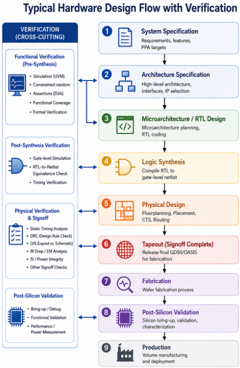
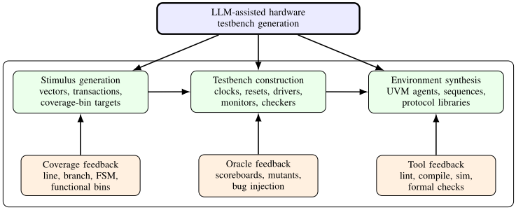
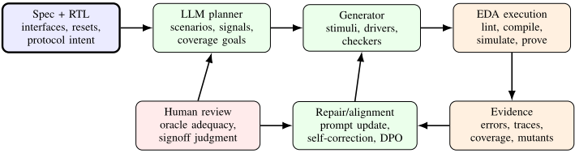
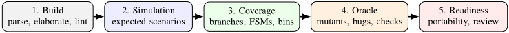
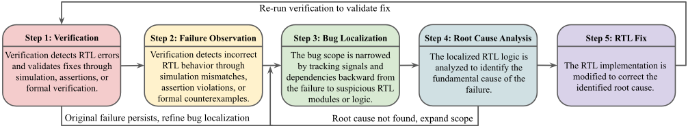

LLM 集成硬件设计验证综述
硬件功能验证约占 IC 开发成本与周期的 60-70%，本综述系统梳理了 LLM 在 SystemVerilog 断言生成、testbench/激励生成、bug 定位与设计修复、形式化验证、等价性检查与 SAT/SMT 求解器优化中的应用。论文按推理时技术（提示、RAG、结构化/多模态上下文、显式推理、搜索与 agentic 工作流）与训练时领域适配两条主线组织文献，并统一比较了各方向的 benchmark 与评测准则。核心结论是：LLM 最有效的角色是嵌入验证感知工作流中的语义推理、搜索与编排组件，由模拟器、形式化引擎、覆盖率工具与求解器提供可执行反馈和正确性证据；并强调“工具通过不等于验证正确”。论文进一步指出语义对齐、与确定性工具的可扩展集成、泛化能力与严格评测（含成本、鲁棒性与人工干预）是关键挑战。对团队而言，这是一份关于“生成-工具反馈-修复”闭环 Agent、多 Agent 分工与分层评测方法论的跨领域模式库。
硬件功能验证是 IC 设计中最昂贵、最耗资源的环节（估计占 60-70% 成本与周期），近年 LLM 被广泛用于断言生成、testbench 生成、调试修复与形式化验证等任务，但已有综述要么把验证作为 EDA 全流程的次要部分，要么覆盖面窄，研究者和实践者缺乏对完整验证工作流、benchmark 生态与剩余技术挑战的统一系统性理解。
系统性文献综述：按验证目标（SVA 生成、激励/testbench 生成、bug 定位与修复、模型检查与等价性检查、SAT/SMT 求解器优化、agentic 验证工作流）× 方法机制（推理时的提示、RAG、结构化/多模态上下文、CoT、候选搜索如 MCTSr、agentic 编排；训练时的领域微调与偏好优化）× 工具交互 × benchmark × 评测准则多维组织文献；提炼“LLM 负责语义推理与编排、确定性工具负责反馈与正确性证据”的神经符号范式，并提出评测证据强度分层（语法有效→形式一致→覆盖率→故障检测→规格对齐）。
背景量化：验证约占 IC 开发成本与周期的 60-70%；2024 Wilson Research Group 调查显示 IC/ASIC 验证团队峰值平均超过 14 名工程师，设计工程师约 50% 时间花在验证上
调试修复：RTLFixer 报告 98.5% 编译错误修复率；MEIC 在 178 个 RTLLM 错误实例上报告语法/功能修复率 93%/78%；UVLLM 在 331 个实例上报告 86.99%/71.92%
定位与修复：LiK 达到 93.38% 定位 pass@1（GPT-4-Turbo 为 77.9%），其定位结果将 GPT-3.5 下游修复率从 40.39% 提升至 58.92%；VeriDebug 报告 67.2% top-1 定位与 64.7% top-1 修复准确率
结构化/搜索式调试：FVDebug 在 38 个 SVA-Eval-Human 用例上报告 RCA Quality@Best 0.956、修复 pass@1/pass@5 71.1%/86.8%；Clover 解决 31/32 RTL-Repair 用例（平均 pass@1 87.5%），优于 R3A 的 29/32（75.0%）
RTL 生成闭环：VerilogCoder 在 156 个 VerilogEval-Human v2 上达到 94.2% pass 率；AutoVeriFix 在 VerilogEval-Human/Machine 上分别达到 77.2%/83.7% pass@1；VeriTrace 在 VerilogEval-V2 上用 Claude Sonnet 4.5 达到 100%
训练时适配：VERT 用约 2 万条开源硬件片段微调 DeepSeek Coder 与 LLaMA 3.1，在所评 SVA 生成任务上超过更大的通用闭源模型 GPT-4o；Hybrid-NL2SVA 基于 67 个设计构建 4,070 条 SVA 配对数据
agentic 形式化验证与求解器优化：Saarthi 端到端自动化率约 40%；GipSAT 在 HWMCC'20/'24 上相对 MiniSat-based IC3 平均加速 3.61×；DeepRTL2 等价性分类报告 68.1% 准确率、72.3% F1
可靠性警示：MARVEL 的 51 项发现中含 19 个真实漏洞、14 个警告与 18 个幻觉发现；LintLLM 在 90 个设计上报告 83.33% 正确率与 12.22% 假阳性率
综述对评测现状的判断：现有 benchmark 规模小（AssertLLM 20 样本、AssertionBench 100、FVEval 79+300+192、CVDP 断言子集 98、AssertLLM2 83）、准则不一且存在训练/评测污染风险，无单一指标能确立规格对齐
相对已有综述（Pan et al. 与 Xu et al. 的 EDA 全流程视角、Yang et al. 的 Verilog 生成视角、Agentic EDA 综述、安全漏洞综述，以及 Liu et al. 的简明验证综述），本文是首个覆盖完整验证流水线（SVA 生成、testbench 生成、调试修复、形式化验证、LEC、求解器优化、agentic 工作流）的验证专用综述；其独特之处在于把验证视为集成的反馈驱动过程而非孤立应用点的集合，统一比较了数据集、benchmark、工具与评测框架，并提出“工具通过≠验证正确”与评测证据强度分层等跨方向结论。
相关度级别：high
命中能力域：3.1 上下文工程与记忆 | 3.2 提示工程 | 3.3 Agent 架构与工具使用 | 3.4 多智能体协作 | 3.5 评测与可靠使用
理由：虽然应用场景是硬件验证而非团队的软件研发场景，但论文综合的技术家族与团队五个能力域几乎一一对应：RAG、知识图谱与结构化上下文、上下文窗口限制管理、带适用条件的持久化经验复用（3.1）；CoT、任务结构化分解提示、中间解释层（如 Coverage Explainer/DUT Explainer）与 Logic-Tree 分步诊断等提示模式（3.2）；“生成-工具反馈-修复”agent loop、工具编排、规划与反思（3.3）；supervisor-subordinate 与规划/生成/验证/调试的角色化多 Agent 分工（3.4）；分层评测证据、成本/迭代/人工干预报告、防污染评测与人机协作（3.5）。其跨领域结论——LLM 作为推理与编排层、确定性工具提供反馈、工具通过不等于正确、复杂 pipeline 的成本与错误传播代价——可直接迁移到团队的 Agent 工程与评测实践。
建议动作：深入精读并做内部分享
arXiv:2610.10580v1 [cs.AR] 2026年10月6日
大语言模型（LLM）集成硬件设计验证综述
Hao Zheng ∗ , Jaime Rafael Imperial ∗ , Bardia Nadimi ∗ , Xiangfei Kong ∗
∗ 美国南佛罗里达大学 Bellini 网络安全、人工智能与计算学院，美国佛罗里达州坦帕市
Email: { haozheng, imperialj, bnadimi, xiangfeikong } @usf.edu
摘要——大语言模型（LLMs）正日益被集成到硬件验证中，以自动化规范解释、验证工件生成、调试、形式化推理和工具编排。本综述对 LLM 辅助的硬件功能验证进行了系统性回顾，涵盖 SystemVerilog 断言生成、激励与测试平台（testbench）生成、缺陷定位与设计修复、模型检验与等价性检验、SAT/SMT 优化，以及新兴的智能体化（agentic）验证工作流。我们按方法论、验证目标、工具交互、基准测试（benchmark）和评估准则对文献进行组织，并考察推理时技术——包括提示（prompting）、检索、结构化推理和智能体化工作流——以及训练时适配。在这些领域中，一个共同的模式浮现出来：LLM 作为嵌入在验证感知工作流中的语义推理、搜索和编排组件时最为有效，而仿真器、形式化引擎、覆盖率工具和求解器则提供可执行的反馈与正确性证据。然而，仅凭工具接受并不足以确立验证的正确性，因为断言、测试、修复或证明可能在满足现有检查的同时，未能忠实捕捉完整的设计意图。因此，我们将规范与验证证据之间的语义对齐、与确定性工具的可扩展集成、对未见设计的泛化，以及对正确性、成本、鲁棒性和人工投入的严格评估确定为关键挑战。最后，我们讨论了迈向以规范为中心、神经符号化和持久化智能体验证系统的新兴方向，这些系统将 LLM 的灵活性与可独立检验的验证证据相结合。
关键词——大语言模型、硬件验证、形式化验证、电子设计自动化。
计算系统已成为现代社会不可或缺的组成部分，支撑着广泛的应用，而这些应用对功能、性能、可靠性、安全性、信息安全和能效提出了日益严苛的要求。在硬件层面，片上系统（System-on-Chip, SoC）设计已成为主导架构，现代芯片集成了数百亿乃至数千亿个晶体管，以及日益异构且紧密耦合的功能模块 [1, 2]。这种不断增长的硬件复杂性，加之社会在安全关键、信息安全关键和任务关键应用中对计算系统的依赖日益加深，使得确保硬件的正确性与可信性变得愈发具有挑战性，也愈发重要。因此，严格的硬件验证是识别设计错误、并在部署前确立硬件实现符合其预期规范之信心的基本要求。
因此，硬件验证已成为集成电路（IC）设计流程中最具挑战性、成本最高且资源消耗最大的阶段之一 [3]，其目标在于确立硬件实现符合其功能需求和设计意图。尽管验证涵盖流片前验证（pre-silicon verification）与流片后验证（post-silicon validation）两个阶段，但流片前验证尤为关键，因为逃逸到制造阶段的缺陷可能需要代价高昂的重新流片（re-spin），导致严重的进度延误，并造成巨大的经济损失 [4]。然而，不断增长的硬件复杂性使得流片前验证越来越难以扩展。2024年 Wilson Research Group 功能验证研究 [5] 报告指出，IC/ASIC 验证团队的峰值规模平均超过14名工程师，而设计工程师约为12名，且设计工程师约将50%的时间用于验证工作。总体而言，据估计验证消耗了 IC 开发成本与周期的60-70% [6, 7]，这凸显了现代硬件验证对更高自动化程度和生产效率的需求。
大语言模型（LLM）[8, 9, 10] 正日益广泛地应用于电子设计自动化（EDA）技术栈的各个环节，因为它们能够解释并生成多样化的硬件制品，包括规范、寄存器传输级（RTL）、断言、测试平台和工具日志。其灵活的自然语言接口使其能够跨异构信息进行推理，并通过检索增强与智能体（agentic）工作流与 EDA 工具进行交互 [11, 12]。因此，LLM 已被探索用于规范分析 [13, 14]、RTL 与硬件生成 [15, 16, 17, 18]、设计空间探索 [19]、验证规划 [20]、断言与测试平台生成 [21, 22, 23, 24, 25]、缺陷定位与修复 [26, 27] 以及自主验证 [28]。近期的方法日益将 LLM 与仿真器、形式化验证引擎、综合工具及外部知识相集成，以使生成内容有据可依并实现迭代式改进 [28, 29]。尽管已取得长足进展，但在确保正确性、缓解幻觉、保留设计意图、扩展至工业规模设计以及建立适合硬件工程任务的严格评估方法等方面仍存在重大挑战，这促使人们针对可信且自主的 LLM 集成硬件验证开展系统性研究。
A. 为什么需要一篇聚焦于 LLM 驱动验证的新综述？
大语言模型（LLM）的迅速普及，催生了日益增多的关于其在电子设计自动化（EDA）中应用的综述文献。现有综述一致将 LLM 视为贯穿芯片设计流程的变革性技术，但其范围与本综述存在实质性差异。Pan 等人 [11] 提供了覆盖整个 EDA 领域的宽泛论述，横跨系统级设计、寄存器传输级（RTL）设计、逻辑综合、物理设计和模拟设计，而验证仅是更为宏大的设计自动化图景中的一个组成部分。Xu 等人 [12] 同样将 LLM 定位为贯穿芯片流程的通用技术，涵盖规范优化、硬件描述语言（HDL）生成、测试、调试、综合以及后端任务执行。因此，他们仅将功能验证置于简短的子节中，遗漏了诸如通用验证方法学（UVM）基础设施构成之类的技术细节。Yang 等人 [30] 将关注范围收窄至 Verilog 代码生成，明确围绕模型、数据集、度量指标、生成技术和对齐来组织文献，但其纳入标准将仅关注修复或测试而不涉及生成的研究排除在外。近期的 Agentic EDA 综述 [28] 聚焦于从 RTL 到 GDSII 流程的自主编排，强调感知—认知—行动循环、工具执行以及从仿真到硅片的差距（sim-to-silicon gap），而非验证任务的详细方法学。文献 [31] 主要关注漏洞识别（例如 Common Weakness Enumerations）和威胁建模。尽管其利用了测试平台（testbench）和断言，但核心度量指标是安全合规性，而非一般性的功能覆盖率收敛。Liu 等人 [32] 的验证专项综述在主旨上与之最为接近，但其篇幅精简，组织形式是对断言生成、测试平台生成、调试以及整体性验证框架的高层次概述。因此，这些工作并未全面覆盖快速扩张的 LLM 驱动的硬件功能验证图景，其中包括测试平台生成、断言生成、覆盖率收敛、缺陷定位、调试、设计修复、验证 Agent、基准测试（benchmark）开发以及评估方法学等新兴技术。随着该领域自 2024 年以来快速增长，数十项聚焦验证的研究相继发表于顶级 EDA 会议与期刊，这一空白变得愈发明显。其结果是，对于 LLM 如何被应用于完整的验证工作流程、相关的 benchmark 生态系统以及尚存的技术挑战，研究人员和从业者目前缺乏统一而系统的理解。表 I 总结了现有文献相对于本综述论文四大支柱的结构性覆盖空白。
本文综述对大语言模型（LLM）集成的硬件功能验证领域的最新研究进行了全面回顾。该领域是一个快速兴起的研究方向，具有独特的工作流程、产物、评估标准和工具集成需求，而这些内容在更宏观的“LLM 用于电子设计自动化（EDA）”类综述中并未得到充分涵盖。与以往将验证视为设计流程中次要组成部分的综述不同，本综述系统地组织了覆盖完整验证流程的文献，包括 SystemVerilog 断言（SVA）生成、测试平台（testbench）与激励生成、缺陷定位、调试、设计修复以及自主验证智能体（Agent）。此外，本综述对该领域所使用的数据集、基准测试（benchmark）、工具和评估框架进行了统一比较，指出了幻觉、工具编排和可扩展性等共性局限，并着重介绍了多模态 LLM、智能体化验证系统和人在回路（human-in-the-loop）验证工作流等新兴研究方向。通过将硬件验证视为一个集成的、反馈驱动的过程，而非一系列孤立的应用，本综述为研究人员和从业者建立了一份全面的参考文献，并为推动 LLM 集成验证从概念验证演示走向可信赖的工程实践提供了路线图。
本文的组织结构如下。第 II 节介绍后续各节所需的背景知识。第 III 节综述利用 LLM 进行 SystemVerilog 断言（SVA）生成的最新研究。第 IV 节综述利用 LLM 进行激励与测试平台（testbench）生成的最新研究。第 V 节综述利用 LLM 进行缺陷定位与设计修复的最新研究。第 VI 节综述利用 LLM 进行形式化验证的最新研究。第 VII 节总结全文，阐述我们对基于 LLM 的验证方法当前所面临挑战的看法，并着重指出富有前景的未来研究方向。
典型的硬件设计流程如图 1 所示，从系统需求到最终制造出的硅片，经历越来越具体的表示形式。系统与体系结构规范定义了功能需求、接口以及性能、功耗和面积（PPA）目标，这些内容随后被细化为微体系结构和可综合的寄存器传输级（RTL）。RTL 经逻辑综合转换为门级网表，随后经过物理设计，包括布图规划、布局、时钟树综合和布线，再经过物理验证与签核，之后才进行流片与制造。制造完成的器件随后需接受针对功能、性能和功耗的流片后验证。
验证是贯穿整个流程的横切活动，而非孤立的设计阶段。在 RTL 和门级层次，功能验证采用仿真、约束随机测试、断言、功能覆盖率、形式化方法以及 RTL 到网表的等价性检查。物理实现则通过静态时序分析、设计规则检查（DRC）、版图与原理图一致性检查（LVS）以及功耗与信号完整性分析加以验证，随后进行流片后验证。由于验证可能在任何阶段暴露出设计缺陷或违反规格说明的问题，该流程本质上是迭代的，验证结果可能触发对早期设计阶段的修订。本综述聚焦于 RTL 和门级层次的功能（逻辑）验证。
2
| Survey | EDA-wide | RTL Gen. | SVA Gen. | Testbench / Stimulus | Debug | Repair | Benchmarks Verification- Centric Scope | |
|---|---|---|---|---|---|---|---|---|
| Pan et al. [11] | ✓ | ✓ | △ | △ | △ | △ △ | × | Broad survey of LLM applications across EDA workflow |
| Xu et al. [12] | ✓ | ✓ | △ | △ | △ | △ × | × | Overview of LLMs in design, testing, optimization, and automation |
| Yang et al. [30] | × | ✓ | × | × | × | × ✓ | × | Focused on Verilog/RTL code generation models, datasets, and evaluation |
| Zang et al. [28] | ✓ | ✓ | × | × | △ | △ × | × | Agentic EDA and autonomous RTL-to-GDSII workflows |
| Liu et al. [32] | × | × | ✓ | ✓ | ✓ | △ △ | ✓ | Overview of LLM-assisted circuit verification |
| This Survey | × | △ | ✓ | ✓ | ✓ | ✓ ✓ | ✓ | Comprehensive survey of LLMs for verification, including assertion generation, testbench/stimulus generation, bug localization, debugging, RTL repair, datasets, benchmarks, evaluation methodologies, tool integration, and open challenges |
| Survey | EDA-wide | RTL Gen. | SVA Gen. | Testbench / Stimulus | Debug | Repair | | Benchmarks Verification- Centric Scope |

硬件功能验证旨在确认实现符合其预期的功能行为与时序行为。它主要综合运用基于仿真的验证、形式化方法以及硬件辅助技术。仿真仍然是主流方法，其通过定向或约束随机激励来驱动设计，并利用覆盖率指标引导验证进展；诸如通用验证方法学（UVM）等方法学则支持可复用且模块化的验证环境 [33]。包括模型检测和等价性检查在内的形式化方法，能够以数学方式确立所规定的属性或行为等价性，并可暴露通过仿真难以到达的边界情况 [34, 35, 36]。这些技术通常依赖布尔可满足性（SAT）求解器 [37, 38] 和可满足性模理论（SMT）求解器 [39, 40]，而硬件仿真与基于现场可编程门阵列（FPGA）的原型验证则可加速执行那些通过软件仿真难以实际探索的大规模工作负载。
典型的功能验证流程会构建一个测试平台，由其生成激励、驱动被测设计（DUT）、监测响应，并将观测到的行为与预期结果进行比对。验证工程师还必须开发测试场景、断言、检查器和覆盖率模型，随后进行迭代仿真、失效诊断和回归测试。覆盖率指标有助于识别未经测试的功能并指导后续验证，但任何单一指标都无法确立验证的完备性 [33]。此外，验证仍然难以扩展，因为现代设计表现出庞大的输入空间与状态空间、漫长的时序行为，以及组件与软件之间复杂的交互。仿真可能无法覆盖难以到达的行为，而形式化方法则面临状态空间爆炸和可扩展性方面的限制 [34, 41]。开发验证工件、诊断失效，以及判断表面上存在的覆盖率缺口是否代表真正的验证缺陷，同样需要大量的硬件专业知识和工程投入。这些挑战促使人们对自动化的兴趣日益浓厚，其中包括基于大语言模型（LLM）的方法，用于生成验证工件、探索设计行为以及辅助验证与调试。
大语言模型（LLM）是在大规模文本和源代码语料库上训练的深度学习模型，用于学习语言、程序设计结构和领域知识的通用表示。大多数现代 LLM 基于 Transformer 架构 [42]，其自注意力机制能够有效建模长程依赖，并支持高度并行化的训练。LLM 通常先经过大规模预训练，随后进行后训练，例如监督微调和基于偏好或反馈的优化，从而使其通用能力适配于指令遵循和任务特定行为。
LLM 可以通过提示来适配下游任务，包括少样本和面向推理的策略，例如思维链（CoT）提示 [43]。这些能力与硬件验证尤为相关，因为在硬件验证中，LLM 可能需要解读规格说明、识别信号与模块之间的关系、生成断言或测试场景，并对验证失败进行推理。然而，LLM 生成的推理和工件并不能保证正确性，这促使人们使用外部知识和确定性验证机制。
3
检索增强生成（RAG）[44] 通过在推理时检索到的任务特定信息来补充模型知识。对于硬件验证而言，检索到的上下文可能包括规格说明、RTL 模块、接口描述、协议文档、断言、验证计划或调试记录。LLM 还可以利用 ReAct [45] 和 Toolformer [46] 等方法与外部工具交互，调用仿真器、形式化引擎、编译器、覆盖率分析器或其他 EDA 工具，并利用其输出改进后续动作。这种基于工具的交互对验证尤为重要，因为确定性工具能够独立地评估所生成的工件。
智能体式 LLM 系统通过将复杂任务分解为多个步骤、维护中间状态、调用工具并迭代地改进结果来扩展这些能力；多智能体框架还可以进一步分配专门的角色，例如规划、生成、验证和调试 [47]。然而，这些工作流必须管理每次模型调用所能获得的有限上下文。庞大的 RTL 层次结构、规格说明、测试平台、波形和工具日志可能超出实际的上下文限制，这促使人们采用长上下文模型、检索、摘要和结构化表示。推理、检索、工具调用和智能体编排共同为将 LLM 应用于硬件验证奠定了基础，而确定性验证工具对于检验其输出仍然不可或缺。
将大语言模型（Large Language Models, LLMs）集成到电子设计自动化（Electronic Design Automation, EDA）流程中，正在推动形成日益自主、由机器增强的硬件设计工作流。VeriGen 等早期工作通过在 Verilog 语料库上微调开源模型，展示了领域适配的可行性 [1]。后续方法探索了自然语言驱动的 RTL 生成与迭代精化，其中 AutoChip 等框架将编译器与仿真反馈融入多轮生成循环，以识别并纠正语法和功能错误 [2]；而 RTLCoder 则在 RTLLM 和 VerilogEval 等基准测试（benchmark）上证明了领域专用训练数据与轻量级开源模型的有效性 [3]。
硬件验证是另一个主要应用领域。基于 LLM 的方法已被开发用于自动化验证配套材料的生成，包括通过 AutoBench 等框架生成测试平台 [4]，以及通过 AssertLLM 等系统从自然语言设计规格说明生成断言 [5]。这些方法减少了将设计意图转化为可执行验证工件所需的人工投入，同时仍保留传统的仿真与形式化验证工具作为最终验证机制。
在 RTL 生成与验证之外，LLM 正被应用于 EDA 优化栈的各个层面。在高层次综合（HLS）层面，C2HLSC 和 HLSPilot 等方法利用 LLM 对 HLS 代码进行转换与优化 [6], [7]。在物理设计层面，ChatEDA 等基于 Agent 的框架利用 LLM 分解设计任务、生成工具脚本，并编排从 RTL 到物理实现的常规 EDA 工具 [8]。总体而言，这些工作利用了 LLM 的三种能力——跨领域语义映射、模式识别和自动推理——来衔接高层设计意图与可执行工件，包括 HDL 代码、验证程序和 EDA 脚本。LLM 并非取代成熟的 EDA 算法，而是日益充当智能接口与助手，自动化重复性任务、引导设计空间探索，并使工程师能够专注于架构、边界情况以及其他需要领域专业知识的任务。
本节首先概述 SystemVerilog 断言（SVA）生成以及使用 LLM 的动机。随后，调研了表 II 所总结的近期基于 LLM 的 SVA 生成方法，涵盖推理阶段与训练阶段两类。接着，评述了表 III 所总结的 SVA 生成方法的评估方法与基准测试（benchmark）。最后，重点指出尚存的挑战与未来方向。
基于断言的验证（ABV）将预期的硬件行为表达为可执行的属性，这些属性既可以通过仿真加以评估，也可以针对实现进行形式化证明。SystemVerilog 断言（SVA）是目前占主导地位的断言语言，在约 80% 采用 ABV 的项目中被使用 [5]。SVA 捕捉功能需求与时序需求，例如协议规则、请求-响应关系、顺序约束以及复位行为，从而为设计意图提供了显式的表示。它们提升了可观测性与调试能力，并支持对那些可能难以通过仿真激发的行为进行形式化探索。
尽管具备这些优势，开发高质量的 SVA 仍然是一项知识密集且耗时的工作。验证工程师必须解读分布于自然语言规格说明、表格、图示和时序描述之中的需求；识别需要验证的行为；将抽象概念映射到实现信号；并使用精确的时序语义对其进行编码。模糊或不完整的规格说明进一步扩大了高层设计意图与可执行断言之间的这一语义鸿沟。
因此，自动化的 SVA 生成所必须应对的不仅仅是语法正确性。一条有用的断言必须在语法上有效，在语义上与预期需求保持一致，并与实现信号及周期级时序正确对齐。这些要求是彼此不同的：一个
| Work | Pre- or Post-RTL | Technique stage Generation style | Technique stage Generation style | Feedback / evaluation | Main contribution | Key limitation |
|---|---|---|---|---|---|---|
| nl2sva [48] | Post-RTL | Inference | Circuit-aware few-shot prompting with editable sub-translations | JasperGold/model-checker feedback with human review | Early circuit-aware NL-to-SVA translation | Proof-of-concept evaluation; substantial human interaction |
| AssertLLM [23] | Pre-RTL | Inference | Multi-LLM task decomposition with structured text/waveform IRs | JasperGold FPV on I2C; syntax and proof pass rates | Full-specification multimodal generation using intermediate representations | Limited benchmark scope; no verifier-in-the-loop refinement |
| AutoSVA2 [49] | Post-RTL | Inference | GPT-4 RTL prompting with engineered syntax/semantic rules | FPV counterexamples and coverage on CVA6 PTW/TLB | Integrates direct RTL-to-SVA generation with AutoSVA | Requires engineer auditing/refinement and formal-tool access |
| AssertionForge [25] | Post-RTL | Inference | Spec+RTL knowledge graph with RAG/SSR and GRW-AS retrieval | JasperGold proof plus COI statement/branch/functional/toggle coverage | Structured spec-RTL grounding for broader assertion generation | KG overhead; no verifier-in-the-loop SVA refinement |
| ChiRAAG [50] | Post-RTL | Inference | Structured-spec prompting with iterative simulation-log repair | Simulation/test-case feedback on OpenTitan designs | Early automatic simulator-feedback refinement of generated SVAs | Few test cases; limited completeness/coverage guarantees |
| SANGAM [24] | Post-RTL | Inference | Multimodal agents with Monte Carlo Tree Self-Refine (MCTSr) | JasperGold proof/coverage feedback on I2C and RV-Timer | Search-based self-refinement for multimodal SVA generation | Two-design evaluation; compute/tool-intensive refinement |
| AssertCraft [51] | Post-RTL | Training + Inference | Subtask-focused fine-tuning plus iterative compiler/FPV-guided prompting | Custom compiler and FPV on HDLBits-derived designs | Combines task-specific fine-tuning with automated syntax/semantic repair | Requires curated training data and golden RTL; gains are coupled to refinement loop |
| AssertCoder [52] | Pre-RTL | Inference | Multimodal extraction plus semantic analyzers and multi-step CoT | Mutation-based model checking and refinement on three designs | Unified text/table/diagram/formula-to-SVA generation | Extraction errors propagate; evaluation limited to three designs |
| Spec2Assertion [53] | Pre-RTL | Inference | Progressive regularization with CoT and property decomposition | JasperGold FPV plus RTL-derived assertion-importance score | Explicit pre-RTL generation and assertion-quality metric | Evaluation metric still requires golden RTL |
| AssertGen [54] | Post-RTL | Inference | CoT objectives with cross-layer spec-to-RTL signal bridging | FPV, COI/proof-core, and mutation coverage on five designs | Generates assertions over internal cross-layer signal chains | Requires RTL/signal artifacts; no closed-loop refinement |
| ChatSVA [55] | Pre-RTL | Training + Inference | Four task-specific agents with AgentBridge data generation, SFT, and RAG | Formal verification on 24 designs; pass rate and coverage | Specialized trained agents for high-coverage end-to-end SVA generation | Heavy data/training pipeline; formal evaluation still depends on RTL oracle |
| SuperSAGA [56] | Post-RTL | Inference | Supervisor-subordinate agents with RAG and verification plan | Iterative formal-tool feedback; OpenTitan coverage evaluation | Agent hierarchy for generation, debug, and refinement | Requires human-reviewed verification plans and formal tools |
| SVAgent [57] | Post-RTL | Inference | Security-property decomposition with RTL/FSM analysis | Pyverilog/TrustHUB; syntax and functional accuracy | Security-focused SVA generation with structured reasoning chains | Limited to selected threat models/vulnerability classes |
| Saarthi [58] | Post-RTL | Inference | Multi-agent vPlan-to-SVA, proof/CEX repair, and coverage closure | Formal proof, counterexamples, coverage, and human escalation | End-to-end AI formal-verification engineer workflow | Human intervention remains for unresolved agent loops |
| ProofLoop [59] | Post-RTL | Inference | ReAct agent with AST-RAG and JasperGold structural queries | Three-round JasperGold proof refinement on FVEval Design2SVA | Adaptive RTL retrieval with solver-in-the-loop generation | Requires retrieval infrastructure and commercial FV tooling |
| KG-Based Agentic FV [60] | Post-RTL | Inference | Spec+RTL+feedback KG with syntax/CEX/coverage refinement loops | Formal diagnostics, CEX, and coverage on seven benchmarks | Persistent traceable grounding across the FV workflow | Complex KG/agent state; design-dependent convergence |
| Validatable Generation [61] | Pre-RTL | Training | Fine-tuned CodeT5/PLBART for NL-to-SVA with back-translation validation | Back-translation/cycle-consistency similarity; no RTL formal check | Early supervised NL-to-SVA translation with an interpretable validation loop | Property-level input only; no full-specification extraction or RTL validation |
| VERT [62] | Post-RTL | Training | LoRA fine-tuning of LLaMA 3.1 and | Syntax plus mutation, formal, and simulation-based functional checks | Large domain-specific SVA dataset showing | RTL-snippet task; limited evidence for full |
| Hybrid-NL2SVA [63] | Pre-RTL | Training + Inference | DeepSeek Coder on Verilog/SVA pairs Qwen2.5-Coder supervised fine-tuning combined with customized HybridRetrieval RAG | Formal evaluation on 40 designs and 229 annotated SVAs | strong gains from local fine-tuning Demonstrates complementary gains from SFT and retrieval for NL-to-SVA | specification-driven generation Targets property-level translation rather than property extraction/full-spec generation |
| Work | Pre- or Post-RTL | Technique stage Generation style | Technique stage Generation style | Feedback / evaluation | Main contribution | Key limitation |
| Dataset / benchmark | Primary use | Scale | Inputs / targets | Construction / source | Evaluation / intended use | Key limitation |
|---|---|---|---|---|---|---|
| AssertLLM [23] | Evaluation | 20 designs | Complete specifications + golden RTL; generated SVAs are evaluated against the design | Open-source IP and system-level designs with full natural-language specifications and verified RTL | Syntax, FPV pass/fail, and COI/proof coverage using formal verification | Small design set and assumes bug-free golden RTL; formal success is only a proxy for specification alignment |
| VERT [62] | Training | 20,000 samples | RTL/code snippets → SVA | Synthetic if-else, case, and combined-logic snippets using variables extracted from open-source HDL projects; synchronous and asynchronous cases | Domain-specific fine-tuning of open-source LLMs for SVA generation | Synthetic snippet-level data does not represent complete specifications, modules, or hierarchical design intent |
| AssertionBench [64] | Evaluation + training | 100 designs | Verilog design → assertion set | Curated OpenCores designs; assertions mined with GoldMine/HARM and formally verified with JasperGold | In-context learning and fine-tuning studies; syntax and FPV proof/counterexample outcomes | RTL-to-SVA setting lacks natural-language specification intent and inherits biases of mined reference assertions |
| FVEval [65] | Evaluation | 571 cases | NL/testbench → SVA; synthetic NL → SVA; RTL → SVA | 79 expert NL2SVA cases, 300 synthetic NL2SVA cases, and 192 generated RTL cases (96 pipelines + 96 FSMs) | Syntax and formal functional/equivalence checking across three assertion-generation settings | Human subset is small; two subsets are synthetic and do not model full specification-driven verification |
| Hybrid-NL2SVA [63] | Training + evaluation | 4,070 training examples; 40 designs / 229 SVAs for evaluation | Natural-language property/explanation → SVA | Synthetic fine-tuning corpus with prompt-guided SVA construction explanations; separate formally verified annotated evaluation set | Fine-tuning/RAG evaluation using syntax and functional/formal matching | Focuses on property-level NL2SVA translation rather than extracting properties from complete specifications or RTL |
| CVDP-cid14 [66] | Evaluation | 98 assertion tasks | Verification prompt/context → SVA | Human-authored tasks within the 783-problem CVDP suite; 68 non-agentic and 30 agentic assertion-generation problems | Executable test-harness/simulation-based pass evaluation in realistic single- and multi-step settings | Assertion generation is only one CVDP category and simulation/harness success does not establish formal or semantic correctness |
| AssertLLM2 [67] | Evaluation | 83 designs, 13 categories | Structured specification + golden/buggy RTL → SVA | Real-world open-source designs (filtered for > 200 RTL lines), normalized specifications, dependency-complete RTL, and systematic mutations | Syntax, formal provability, COI/proof/formal coverage, and mutation-based bug detection in bug-prevention and bug-hunting settings | Still relatively small and untested among the broader LLM for SVA generation community |
| Dataset / benchmark | Primary use | Scale | Inputs / targets | Construction / source | Evaluation / intended use | Key limitation |
断言可能成功编译，却表达了错误的行为；而针对 RTL 通过形式化证明的断言，仍可能错误地表达规范。信号与时序的对齐尤为具有挑战性，因为规范通常以抽象方式描述行为，而 SystemVerilog 断言（SVA）必须确定具体的信号、采样事件、延迟和时序关系。除单条断言之外，实用的生成应当产出一个断言集合，该集合在提供充分规范覆盖的同时，避免空洞、冗余或不一致的属性。
1) LLM 出现之前的自动化 SVA 生成：在 LLM 出现之前，自动化断言生成主要依赖模板、规则、静态分析以及仿真轨迹挖掘。GoldMine [68] 从仿真轨迹中挖掘候选不变式，将其映射到预定义的断言模板，并应用形式化验证来剔除无效候选。A-Team [69] 将模板与数据挖掘及覆盖率引导的启发式方法相结合，而 HARM [70] 则利用用户提供的命题、模板和度量来生成时序属性。
这些方法提供了可预测且结构化的生成方式，但其表达能力受限于预定义的模板、命题或观测到的执行行为。因此，它们可能难以应对前所未见的属性结构、复杂的时序关系以及仅在规范层面表达的需求。轨迹挖掘方法还可能推断出恰好在所观测实现上成立的属性，而非代表预期行为的属性。更根本的是，传统方法在解释非结构化规范以及确定应验证哪些属性方面的能力有限，从而在设计需求与所生成的断言之间留下了语义鸿沟。
2) 基于 LLM 的 SVA 生成动机：LLM 通过解释自然语言需求、生成代码以及跨异构设计信息进行推理，提供了一种互补能力。它们有望从规范中提取行为关系，将其转化为时序属性，并且在 RTL 可用时，将规范概念映射到具体的信号和实现结构。检索与多模态技术可进一步融合来自大型文档、表格、图表和波形的信息。这些能力使 LLM 在弥合规范到断言语义鸿沟方面尤为具有吸引力。
然而，LLM 生成具有概率性，无法提供正确性保证。生成的断言可能包含语法错误、不正确的时序关系、错误的信号映射，或看似合理却并未反映设计意图的属性。因此，近期的方法日益将 LLM 生成与结构化设计表示、检索、仿真、形式验证、覆盖率分析以及迭代细化相结合。在此类工作流中，LLM 提供语义解释和候选生成，而确定性验证工具则提供用于验证与细化的反馈。
一个关键区别在于断言是在 RTL 可用之前还是之后生成。RTL 前方法主要从规范中推导属性，因此与实现错误保持更大的独立性，但在将抽象需求映射到具体信号和周期级时序方面面临困难。RTL 后方法利用实现信息来增强信号与时序的落地，并生成更易于执行的断言，但存在这样的风险：所生成的属性可能重现错误的 RTL 行为，而非独立地检查规范。因此，有效的基于 LLM 的 SVA 生成必须在规范忠实性与实现落地之间取得平衡，利用 RTL 来解决实现细节，同时不允许其凌驾于规范所确立的验证意图之上。
推理时（inference-time）方法利用预训练 LLM 生成 SVA，而无需修改其模型参数。与基于微调的方法相比，这类方法能够便捷地纳入新的规范、RTL 设计、检索到的知识以及验证工具的反馈。现有方法已从直接的自然语言翻译演进为结构化、多模态、工具落地和智能体化（agentic）的工作流，以应对从规范到 SVA 转换过程中的不同阶段。
1) 结构化分解与设计落地：NL2SVA [48] 是最早基于 LLM 的方法之一，它将人工提供的自然语言属性描述翻译为一种中间表示，其中包含信号信息、部分翻译结果和候选 SVA。随后采用模型检测（model checking）来验证这些断言，并在需要精化时引入人工干预。尽管该工作流证明了将 LLM 生成与形式验证相结合的可行性，但它假设相关需求已经从规范中提取完毕，因而并未自动化从完整设计文档中识别验证属性这一更为困难的任务。
AssertLLM [23] 将这一方向扩展为从完整规范出发的端到端生成。它并非直接以整个文档作为提示输入 LLM，而是将任务分解为规范分析、信号映射和断言生成，从而在生成 SVA 之前先产生结构化的中间描述。它还通过检索纳入与断言相关的知识，并处理文本与波形信息。这种分解降低了单次推理步骤的推理负担，并使中间结果更易于检查。然而，由于 AssertLLM 的设计知识主要来源于规范，规范中缺失的实现细节可能仍无法得到解决。
AssertionForge [25] 通过让生成同时落地于规范和 RTL 来解决这一局限。它从规范概念构建面向硬件的知识图谱（KG），并将其与 RTL 实体和关系相融合，随后进行多分辨率上下文提取以支持 SVA 生成。与 AssertLLM 主要以规范为中心的分解相比，这种表示将高层需求与实现级信号和依赖关系显式地关联起来，改善了可用于断言生成的上下文。其代价是预处理复杂度的增加以及对 RTL 更强的依赖：KG 构建中的错误或错误的实现可能传播到所生成的属性中，从而可能削弱其作为规范级检查的独立性。
AutoSVA2 [49] 同样引入了中间规则来约束 SVA 生成。综合来看，这些方法表明，中间表示——包括结构化描述、规则和知识图谱——有助于分解从异构规范到时序逻辑之间的巨大语义跨越。然而，额外的表示也会带来新的环节，使信息可能在这些环节中被遗漏或遭到错误转换。
2) 多模态处理与显式推理：硬件规范经常以表格、时序图、波形、等式和插图而非纯文本的形式来编码关键行为。AssertLLM [23] 融入了波形信息，而 AssertCoder [52] 则更明确地对多模态规范处理进行分解，在断言生成之前将图表、波形、表格和公式转换为伪代码、形式化表达式、L A T E X 或 JSON 等结构化表示。SANGAM [24] 同样采用专门的 Spec Analyzer、Signal Mapper 和 Waveform Analyzer 组件，从规范中提取互补信息。这些方法降低了对文本描述的依赖，并能恢复纯文字描述中无法获得的时序或结构信息。然而，其有效性取决于多模态解释的准确性；对波形或表格的错误解释可能在 SVA 生成开始之前就引入语义错误。
显式推理提供了衔接规范与时序属性的另一种机制。Spec2Assertion [53] 在 RTL 前的场景中应用思维链（CoT）提示和渐进正则化，鼓励模型在构造 SVA 之前对前件、后件、时序关系和周期依赖进行推理。AssertCoder [52] 将多步推理扩展到结构化的多模态输入，而 AssertGen [54] 则先从规范中提取验证目标，随后将其映射到 RTL 信号。因此，后一类方法将显式推理与实现落地相结合，解决了纯 RTL 前推理的一个主要局限。尽管如此，看似合理的推理轨迹并非语义正确性的证据：错误的时序假设或对需求的不完整解释仍可能产生格式良好但不正确的断言。
3) 检索与验证引导的精化：检索增强生成（RAG）无需修改 LLM 即可提供外部知识。例如，AssertLLM [23] 检索与 SVA 相关的验证知识以改进生成，而 AssertionForge [25] 则针对设计特定的关系采用基于图的检索。这一区别十分重要：通用验证知识主要帮助模型理解如何表达断言，而设计特定检索则帮助确定应当表达哪些行为。因此，后者与规范到 RTL 的语义对齐更为直接相关。
最新的框架进一步将生成与迭代反馈相结合。NL2SVA [48] 引入了带有人工引导精化的模型检查反馈，而 Self-Refine [71] 等通用自精化方法则证明 LLM 能够批判并修订自身的输出。ChIRAAG [50] 通过解释错误并重新生成失败的断言，将验证工具反馈应用于 SVA 修正。这类反馈对于语法错误和工具可检测的错误尤为有效，因为编译器和形式化引擎能够提供客观的诊断信息。其在纠正语义错误方面的能力则较为有限：一个能够成功编译或针对 RTL 得到证明的属性，仍可能编码了错误的需求。
SANGAM [24] 通过蒙特卡洛树自精化（Monte Carlo Tree Self-Refine, MCTSr）将线性自精化扩展为候选搜索。在完成多模态规范处理后，它针对各个信号探索多条推理轨迹，并利用所得的轨迹来生成断言。与一次性生成或线性精化相比，这种方法降低了对单次随机生成的依赖，并能够探索涉及不同信号依赖关系或时序关系的备选方案。然而，其有效性在很大程度上取决于奖励或选择准则；若主要以形式化工具的成功为优化目标，则可能偏向那些虽可证明但薄弱、空洞或语义错位的断言。因此，SANGAM 代表了一种转变：从单纯修复已生成的断言，转向在候选解释空间中进行搜索。
AssertCoder [52] 和 AssertGen [54] 进一步引入变异测试，以评估所生成的断言能否检测出注入的 RTL 故障。与仅凭语法或证明成功相比，这为验证有用性提供了更强的证据，因为它评估的是故障检测能力。尽管如此，变异得分仍然取决于所注入故障的代表性，其本身并不能证明某个断言忠实地表达了规范。
4) 智能体式 SVA 生成：从任务分解与迭代精化出发的演进自然导向了智能体式工作流，其中专门化的组件相互协调，共同完成规范分析、检索、断言生成、工具执行与修复。AssertLLM [23] 和 SANGAM [24] 已经展现出基于角色分解的若干要素，尽管它们的主要贡献在于结构化生成与搜索，而非自主的工具编排。
更为显式的智能体式方法对这一分解加以扩展。ChatSVA [55] 将 SVA 生成构建为一个端到端的多智能体工作流，其中设有专门负责规范处理、功能检查点提取和断言生成的阶段，同时其 AgentBridge 基础设施支持构建任务特定的数据。SuperSAGA [56] 采用监督者-下属架构，将检索增强生成（RAG）、经人工审查的验证计划、形式化工具反馈与迭代式断言精化相结合。SVAgent [57] 则将智能体式分解专门应用于硬件安全验证，在生成 SVA 之前先把复杂的安全需求拆解为更细粒度的验证任务。
这一方向也与更广泛的智能体式形式化验证系统日益重叠。Saarthi [58]、ProofLoop [59] 以及基于知识图谱（KG）的智能体式形式化验证框架 [60] 借助验证规则手册、知识图谱检索、形式化工具查询、反例引导的精化和覆盖率反馈等机制来协调断言生成。这些系统将 LLM 的角色从断言生成器扩展为验证过程的编排者。然而，更高的自主性也带来了更高的流水线复杂度、推理与工具执行成本，以及更多的错误传播机会。因此，只有当提取出的需求、信号映射、验证计划和候选断言等中间产物本身能够被独立验证，而不是仅仅信任最终输出时，智能体式分解才能发挥最大效用。
5) 总结与尚存的局限性：总体而言，推理时 SVA 生成已沿着若干互补的维度不断演进。NL2SVA 等早期方法专注于翻译显式给定的需求，而 AssertLLM 则通过任务分解将生成范围扩展至完整规范。AssertionForge 和 AssertGen 强化了规范到 RTL 的落地；AssertCoder 和 SANGAM 融入了多模态信息；Spec2Assertion 强调显式推理；SANGAM 进一步引入了对备选推理轨迹的搜索；而近期的智能体式框架则将这些能力与外部验证工具相协调。因此，该领域正从直接的 NL 到 SVA 翻译，迈向规范理解、设计落地、候选生成、验证与迭代精化。
7
尽管取得了这些进展，仍有三个局限性普遍存在。第一，更强的 RTL 落地改善了信号映射与可执行性，但可能削弱其相对于实现错误的独立性；而仅基于规范的方法虽然保留了验证意图，却难以处理实现层面的细节。第二，工具反馈为语法、可满足性以及相对于 RTL 的行为提供了可靠的证据，但其本身并不能确立与规范的语义一致性。第三，日益复杂的推理、搜索与多智能体流水线以延迟、工具调用、计算成本以及更多产生中间错误的机会为代价提升了鲁棒性。因此，未来的推理时方法需要在独立验证中间表示的同时，将规范忠实性与实现落地相结合，并使用语义正确性、覆盖率、非空洞性（non-vacuity）以及现实的故障检测能力等互补度量来评估所生成的断言集合。
训练时方法通过利用硬件验证专用数据更新大语言模型（LLM）的参数，使其适应 SVA 生成。与推理时方法不同——后者在不修改底层模型的情况下依赖提示、检索、结构化上下文、搜索或工具反馈——微调试图将 SVA 语法、时序语义以及反复出现的硬件属性模式内化到模型中。这可以提高生成的一致性，并使更小的开源模型能够执行专门的验证任务。然而，由于 SVA 生成涉及多个阶段——包括需求提取、信号映射、时序推理和断言构造——大多数现有的训练时方法都聚焦于特定子任务，而非学习从规范到 SVA 的完整过程。
1) 属性级翻译与语义适配：Aditi 和 Hsiao [61] 提供了将微调用于 SVA 生成的早期示范，他们将 CodeT5 和 PLBart 适配为把自然语言属性描述翻译成断言。此外，生成的 SVA 还会被回译为自然语言并与原始描述进行比较，从而在输入需求与生成的属性之间提供一种可解释的一致性检查。这项工作表明，任务特定的训练能够教会模型自然语言所描述的时序行为与 SVA 构造之间的对应关系。然而，该方法假设目标属性已经被识别出来，并以简洁的自然语言语句加以表达。因此，它解决的是属性翻译问题，而非从完整规范中提取验证需求这一更宽泛的问题。而且，回译衡量的是语言一致性而非行为正确性；一条断言在自然语言层面可能显得一致，但仍可能包含错误的时序语义，或未能正确表示 RTL 的行为。
Hybrid-NL2SVA 遵循类似的属性翻译框架，但将领域特定微调与推理时增强相结合。该方法使用一个合成数据集对 Qwen2.5-Coder7B-Instruct 进行微调，该数据集由硬件设计教科书以及从 67 个设计中收集的 Verilog 构建而成，包含 4,070 条 SVA，每条 SVA 均配有使用 OpenAI o4mini 生成的一句话自然语言描述。所得模型在微调后表现出显著提升，而基于检索的增强进一步改进了生成效果。与早期的 CodeT5/PLBart 方法相比，Hybrid-NL2SVA 受益于更强的预训练代码模型、更大规模的硬件专用数据集以及训练/推理混合策略。然而，这两种方法共享相同的基本抽象：它们都假设相关属性已被提取并以自然语言表达。因此，它们的结果证明了自然语言到 SVA 翻译的改进，但为完整的规范驱动断言生成提供的证据有限。此外，合成的自然语言标签与自动收集的断言使得性能依赖于所构建训练对的语义质量。
2) 规范条件化与混合微调：AssertCraft [51] 通过使用从开源仓库中提取并筛选的断言相关示例以及合成数据对 LLM 进行微调，向规范驱动的生成更迈进了一步。AssertCraft 并非完全依赖微调后的模型，而是将任务特定适配与推理时迭代精化循环相结合，在该循环中，候选断言可借助未经微调的 LLM 进行修复。这种混合架构具有重要意义，因为它将微调与推理时推理视为互补：微调提供领域特定的生成能力，而迭代精化则处理生成之后仍然存在的错误。
这一设计也揭示了评估训练时方法时的一个重要困难。AssertCraft 的改进源自多个相互作用的组件，包括数据集构建、任务分解、微调后的生成器以及迭代精化。因此，在缺乏受控消融实验的情况下，端到端的改进未必能够单独归因于微调。更一般而言，微调可以提升模型对 SVA 模式的先验知识，但并不能消除对规范落地或外部验证的需求。在高质量断言示例上训练的模型，仍可能生成不适合当前所验证特定设计的属性。
3) 领域专用模型适配：VERT [62] 进一步强调了领域专用训练数据的价值。它从开源硬件设计构建了一个大规模的 SystemVerilog 断言（SVA）数据集，并用其对 DeepSeek Coder 和 LLaMA 3.1 模型进行微调，随后在多个硬件设计上将所得模型与 GPT-4o 进行比较。结果表明，经硬件验证数据适配的较小开源模型在所评估的 SVA 生成任务上能够超越规模大得多的通用闭源模型。这为以下观点提供了重要证据：对于专门的验证任务，领域适配能够弥补模型规模方面的不足。经过微调的开源模型还支持本地部署，当专有 RTL 和规范无法暴露给外部模型提供商时，这一点尤具吸引力。
8
然而，VERT 也暴露了当前训练时方法的一个反复出现的局限：训练数据的粒度与来源强烈地决定了模型所学到的内容。从开源代码库中挖掘得到的断言提供了符合实际的 SVA 语法和反复出现的时序模式，但片段级示例中关于断言所源自的完整规范与设计上下文的信息十分有限。因此，在局部断言生成任务上的出色表现并不必然意味着模型能够从完整规范中识别出合适的验证目标、跨模块层次进行推理，或为未见过的 IP 构建全面的断言集合。
4) 跨方法分析与局限性：综合来看，这些研究展示了从针对自然语言（NL）到 SVA 直接翻译的微调，到嵌入于更大验证流水线中的领域适配模型的演进过程。Aditi 和 Hsiao [61] 确立了学习自然语言属性与 SVA 之间映射的可行性；Hybrid-NL2SVA 使用现代代码大语言模型（LLM）、合成数据与检索，将这一设定扩展至更大规模；AssertCraft [51] 将微调与推理时迭代精化相结合；而 VERT [62] 则表明，足够专门化的训练能够使较小的开源模型与更大的通用模型相媲美乃至更优。因此，训练时技术与推理时技术正日益互补，而非相互竞争的替代方案：微调将反复出现的领域知识内化，而检索、结构化上下文、RTL 落地以及验证工具反馈则提供了无法被合理编码进模型参数的设计特定信息。
然而，当前的训练时方法仍主要聚焦于学习如何将属性表达为 SVA，而不是确定哪些属性才能充分验证一个设计。大多数训练数据集由断言片段或自然语言描述与 SVA 的配对组成，对完整规范、RTL 层次结构、验证意图以及多个属性之间关系的表示相对有限。数据集构建还引入了来自含噪的仓库断言、自动生成的描述、重复样例以及训练设计与评估设计之间可能存在的重叠等风险。这些问题使得在评估微调模型时，数据质量、数据来源（provenance）与数据污染控制尤为重要。
因此，未来的训练时方法需要能够保留规范、RTL、验证目标、断言与验证结果之间更丰富关系的数据集。训练目标同样可以从对单个断言的下一词元（next-token）预测，转向学习规范到属性的对齐、信号落地（signal grounding）、时序推理以及断言集合构建。重要的是，微调不应取代确定性验证：编译、仿真、形式化分析、空洞性检查（vacuity checking）与变异测试对于独立评估所生成的属性仍然是必要的。因此，一个有前景的方向是混合架构：领域特定的训练提供高效的硬件验证知识，推理时的检索与推理提供设计特定的上下文，而形式化工具则对正确性与验证有效性提供客观反馈。
上文所综述的推理时与训练时方法采用了不同的机制来改进 SVA 生成，其范围涵盖从结构化提示、检索、推理与形式化工具反馈，到领域特定的微调。然而，评估这些方法不仅需要确定 LLM 能否生成可执行的 SVA 代码，还需要确定所生成的属性是否忠实地捕捉了验证意图，并能否有效检测错误行为。因此，现有的评估可以被视为提供了强度递增但相互补充的证据形式：语法有效性、形式一致性、覆盖率、故障检测能力，以及最终的规约对齐。
1) 评估方法学：语法有效性是最基础且被最广泛报告的指标。它衡量所生成的断言能否被 SystemVerilog 验证工具解析、编译并接受。该指标开销小、具有确定性，对于衡量提示技术或微调是否提升了对 SVA 语法的掌握尤为有用。然而，编译仅能确立断言是可执行的；一个语法正确的属性仍可能检查的是错误的行为、使用不恰当的时序，或编码了错误的需求。
形式化属性验证（FPV）通过使用 JasperGold 或 SymbiYosys 等形式化验证工具，将所生成的断言与 RTL 实现进行对照检查，从而提供更强的行为证据。如果假定一个可信的 golden RTL 实现正确地实现了规约，那么证明的成功便提供了所生成断言与预期设计行为相一致的证据，而反例则可以识别出不正确的属性。因此，FPV 被 AssertLLM [23]、VERT [62]、AssertionBench [64] 和 FVEval [65] 等基准测试（benchmark）广泛采用。然而，FPV 并不是一个直接的语义判定基准（semantic oracle）。一个薄弱的、空洞的或被错误解读的断言仍可能是可证明的，并且结果依赖于 RTL、假设、约束以及形式化环境。对于复杂的设计，证明也可能超时或无法得出结论。因此，FPV 主要确立的是与被分析实现的一致性，而不一定是相对于原始规约的正确性。
覆盖率分析通过度量所生成的属性与实现之间的关系来补充形式化属性验证（FPV）。现有工作报告的指标包括影响锥（cone of influence, COI）、证明覆盖率、形式化覆盖率，以及视环境而定的语句覆盖率、分支覆盖率或翻转覆盖率。AssertLLM [23] 在采用 FPV 的同时引入了基于 COI 的分析，而诸如 VERT [62] 与 AssertLLM2 [67] 等后续基准测试（benchmark）则采用了更广泛的覆盖率度量。覆盖率能够暴露那些对设计约束或观测甚少的平凡断言，并能够评估断言集合的整体触达范围。然而，高覆盖率并不意味着正确的验证意图：一个属性可能涉及许多 RTL 信号，却仍然编码了与规格说明不一致的行为。
变异测试评估的是另一个维度——断言能否检测出错误的实现。变异被引入一个原本正确的 RTL 设计中，而所生成的断言则根据其在含故障版本上是否会失败来加以评估。AssertCoder [52]、VERT [62] 与 AssertLLM2 [67] 采用基于变异的评估来补充语法、证明与覆盖率指标。与仅在黄金 RTL 上证明断言相比，变异测试为实际的故障检测能力与断言强度提供了更有力的证据。然而，其有效性在很大程度上取决于所注入故障的真实性、多样性与相关性。容易被检测的或人工构造的变异可能会使性能虚高，而大规模生成具有代表性的语义缺陷仍然困难。因此，变异得分应被解读为故障检测有效性的一种度量，而非对规格说明正确性的直接证明。
这些指标评估的是彼此互补的属性，而非可以相互替换的正确性概念。语法检查确立的是可执行
3) 跨基准测试分析与开放挑战：综合来看，这些基准测试（benchmark）揭示了任务复杂度与评估强度两方面的演进。AssertionBench 等属性级基准测试以及 FVEval 的部分内容为自然语言到 SVA 的转换提供了受控评估，而 VERT 强调规模，特别适合用于训练时的领域自适应。AssertLLM 与 AssertLLM2 迈向以完整规范和设计为条件的生成，更好地检验了推理时系统的推理、检索、信号落地与精炼能力。CVDP 则在更广泛的 EDA 任务环境中评估断言生成。类似地，评估已从语法检查逐步推进到 FPV、覆盖率与变异测试，近期的基准测试日益将这些指标结合使用。
然而，由于各基准测试在设计来源、规模、输入信息、属性粒度、形式化环境与评估标准方面存在差异，对已报告结果进行直接比较仍然困难。训练时评估还带来了数据污染或仓库重叠的额外担忧，尤其是当训练样本与评估样本均源自公开 RTL 仓库时。推理时方法也面临类似的担忧，因为规范、RTL 或参考断言可能已出现在模型预训练数据中。因此，在留出（held-out）设计上、并在可能的情况下于此前未发表或经过严格污染控制的基准测试上进行评估，对于确立泛化能力十分重要。
更根本而言，现有基准测试对断言集合质量的度量仍然有限。独立地评估断言并不能确定所生成的集合是否充分覆盖了规范、是否包含冗余或相互矛盾的属性、或是否遗漏了关键需求。因此，未来的基准测试应保留规范、RTL、参考验证目标、断言与真实故障之间的显式关联，从而能够分别度量语法有效性、语义保真度、规范覆盖率、非空洞性、一致性、行为多样性与故障检测能力。对于迭代式与智能体式（agentic）方法，评估还应报告推理成本、验证工具运行时间、精炼迭代次数或工具调用次数、多次重复运行下的鲁棒性以及人工干预情况。这样的多维评估对于比较日益复杂的推理时与训练时方法、以及判断 SVA 生成方面的改进能否转化为更有效的硬件验证而言，都是必要的。
尽管从直接的自然语言（NL）到 SVA 的翻译向结构化、工具引导、微调与智能体式（agentic）方法的演进已取得长足进展，但在 LLM 生成的 SVA 能够可靠地用于实际验证之前，仍存在若干挑战。
语义对齐与评估。一个根本性挑战在于判断所生成的断言是否忠实地表达了规范。现有方法通常依赖语法检查、形式化属性验证（FPV）、覆盖率以及变异测试。这些方法分别就可执行性、与 RTL 的一致性、设计交互以及故障检测能力提供互补的证据，但没有一种能够直接确立规范保真度。SpecAlign [72] 代表了向显式评估所生成 SVA 与其对应规范之间语义对齐迈出的第一步。然而，规范层面的评估仍然具有挑战性，尤其是当黄金 RTL（golden RTL）同时用于生成与验证时，因为由有缺陷的 RTL 推导出的错误属性仍可能针对该 RTL 被形式化证明成立。因此，未来的评估应将互补的度量与独立的规范层面评估相结合。标准化的基准测试（benchmark）还应包含多样化的未见设计、真实的规范与故障，以及数据污染控制措施，以便在不同方法之间实现有意义的比较。
从单条断言到断言集合。现有评估主要针对单个属性进行评价，而实际验证取决于完整的断言集合能否充分捕捉设计意图。生成大量简单且正确的断言可能会产生良好的总体结果，却遗漏复杂的行为或交互。因此，未来的评估应在断言集合层面考虑规范覆盖率、非空洞性、冗余性、一致性、行为多样性以及故障检测有效性。在规范需求与所生成属性之间建立显式的可追溯性，还能进一步揭示缺失或未被充分表达的需求。
泛化能力、可扩展性与成本。训练时方法展现了领域自适应的收益，而推理时方法则通过检索、结构化表示与工具反馈来改进针对特定设计的推理。然而，两者仍然对数据质量敏感，且大多在相对较小的设计或局部属性上进行评估。要扩展到复杂的 SoC，需要跨层次化 RTL 与规范进行推理，同时在模块与抽象层次之间有选择地检索相关信息。此外，多模态处理、候选搜索、智能体式工作流以及反复的形式化工具调用都会增加延迟与计算成本。因此，未来的评估应报告推理与验证的运行时间、工具调用次数、精炼迭代次数与人工干预情况，并结合受控的消融实验来分离各项技术各自的贡献。
11
迈向完整的验证属性集。另一个有前景的方向是假设、断言与覆盖属性（cover properties）的联合生成。假设刻画有效的环境行为，断言规定所需的设计行为，而覆盖属性则确立重要场景的可达性。将三者一起生成并加以验证，可以减少虚假失败、暴露过度约束与空洞性，并且相比仅使用断言，能够更完整地表达验证意图。
总体而言，未来的研究应当从优化单个有效断言的生成，转向构建与规范对齐且经过独立验证的验证属性集。LLM 非常适合用于解释需求、连接异构工件之间的信息以及提出候选属性，而确定性仿真与形式化工具则提供必不可少的验证与反馈。将这些互补能力结合起来——同时保持对规范的可追溯性、控制成本，并保持独立于实现错误——是一条有前景的路径，有助于减少人工断言开发的工作量，并实现可靠的、以评审为中心的基于断言的验证。
本节综述了硬件验证中自动测试平台（testbench）与激励生成方面的最新研究，重点聚焦于基于大语言模型（LLM）的方法。本节首先将 LLM 方法与 LLM 出现之前的基于模板和文法的工具进行对照定位，随后依次评述纯提示生成、EDA 反馈闭环、覆盖率导向的激励生成、自验证测试平台构建、UVM/子系统级生成、训练时对齐以及基准测试（benchmark）设计。主要结论是：当前 LLM 在嵌入到验证感知型工作流中时最为有用——这类工作流利用场景、模板、仿真器、覆盖率报告和功能自检来约束生成过程——而不是将其用作不受约束的 SystemVerilog 代码编写者。
基于仿真的功能验证仍然是最常见的流片前验证技术之一。一个有用的测试平台（testbench）绝不仅仅是能够通过编译的代码：它需要实例化被测设计（design under test, DUT）、施加有意义的激励、观察输出、将行为与判定基准（oracle）或参考模型进行比对，并记录结构覆盖率或功能覆盖率。在工业界的 SystemVerilog 流程中，这通常会扩展为通用验证方法学（Universal Verification Methodology, UVM）中的各类组件，例如序列项（sequence item）、序列器（sequencer）、驱动器（driver）、监视器（monitor）、agent、记分板（scoreboard）、覆盖率收集器（coverage collector）以及测试用例（test）[73, 74]。诸如 cocotb 这类基于 Python 的测试环境（harness）也同样相关，因为许多大语言模型（LLM）工作流会利用 Python 在预训练语料库中更强的代表性来实现检查器（checker）、参考模型或编排代码 [75]。
关于 LLM 辅助测试平台生成的文献可以划分为三个相关但又彼此不同的任务。第一个是激励生成（stimulus generation）：产生能够提升代码覆盖率或功能覆盖率的输入向量、事务（transaction）或序列。第二个是测试平台构建（testbench construction）：产生可执行的驱动器、时钟、复位、监视器和检查器。第三个是验证环境综合（verification-environment synthesis）：生成可复用的 UVM 或子系统级验证基础设施。这些任务在难度上有所不同。激励生成可以依据覆盖率和仿真器输出来评判，而完整的测试平台生成还要求正确的时序、复位处理、协议一致性以及忠实的 oracle。这一区别解释了为什么许多近期系统将 LLM 用作规划器（planner）或修复 agent，而由确定性的代码模板、领域专用语言（DSL）或仿真器来强制实现最终的可执行结构 [76, 77, 78, 79]。
图 2 总结了这一分类体系以及贯穿这三个任务层级的反馈信号。
自动测试平台生成早于现代大语言模型（LLM）。早期的工具展示了至今仍然重要的两条经验：第一，约束输出空间能显著提升语法稳定性；第二，仿真吞吐量至关重要，因为验证需要反复执行。例如，AVERT 利用被测设计（DUT）的端口信息和标准测试向量文件，为基于语法演化（grammatical evolution）的硬件设计工作流生成 Verilog 测试平台；它支持组合电路与时序电路，并通过在单个生成的测试平台中评估多个 DUT 来提升仿真效率 [80]。这类方法并未解决 oracle 发现或语义充分性的问题，但它们表明，结构化生成能够消除重复性的格式化工作，并减少可避免的语法错误。
其他前 LLM 时代的工作还包括覆盖率导向的测试生成、定向测试以及寄存器传输级（RTL）模糊测试。机器学习辅助的覆盖率导向生成与定向硬件验证所强调的，正是如今 LLM 系统重新审视的同一个优化问题：选择那些既能高效收敛覆盖率、又能保持缺陷发现能力的测试 [81, 82]。RFUZZ、DirectFuzz 和 FuzzWiz 表明，模糊测试式的反馈可以借助覆盖率或硬件特定的引导来驱动 RTL 探索，这使它们成为激励生成研究中重要的非 LLM 基线 [83, 84, 85]。
传统的约束随机验证同样为 LLM 相关工作提供了有用的基线。随机化与覆盖率反馈能够探索大规模的输入空间，尤其是在通用验证方法学（UVM）风格的环境中，但工程师仍然必须编写约束、监视器、记分板和覆盖率模型。因此，基于 LLM 的方法不应只针对直接提示进行评估；在适当的情况下，还应将其与随机、约束随机、基于模板、基于模糊测试以及覆盖率导向的基线进行比较。这一点尤为重要，因为如果检查器薄弱或缺失，即使生成的测试平台提升了行覆盖率，仍可能遗漏功能性缺陷。
12

生成过程应当受可执行的验证证据约束，而不仅仅是自然语言层面的合理性。
最早的一批基于大语言模型（LLM）的测试平台研究，通常将寄存器传输级（RTL）和自然语言规格说明作为提示提供给商用模型，对生成结果进行编译或仿真，并将工具输出反馈到后续的提示中。Bhandari 等人针对有限状态机（FSM）测试平台生成与缺陷检测研究了这一模式。他们的工作流程让 GPT-3.5 或 GPT-4 生成测试，利用商用电子设计自动化（EDA）工具的反馈来识别未覆盖的状态转换或错误，并迭代地改进提示，直到覆盖率得到提升。这项工作之所以重要，是因为它将仿真器输出和覆盖率输出视为提示上下文中的一等公民，而不仅仅是事后评估步骤 [86]。
这项 FSM 研究还揭示了一个反复出现的局限性：LLM 难以应对长轨迹、大量状态以及多位输出。作者通过将轨迹分块、在每组转换之后进行复位，以及将多位输出分解为更小的子问题来缓解这一问题。这为测试平台生成指明了一条更广泛的设计原则：可扩展的系统应避免让模型在单个上下文窗口中对整条轨迹或完整环境进行推理。相反，它们应当将任务分解为局部的覆盖率缺口、单项协议义务或更小的信号锥。
第二条工作路线主要将 LLM 用作覆盖率导向的激励生成器。LLM4DV 是一个开源框架，它编排 LLM 来跨多个被测设计（DUT）生成硬件测试激励。它并不要求生成完整的验证环境，而是迭代地采样遗漏的覆盖率仓、重启或细化对话上下文，并使用少样本提示（few-shot prompting）来引导输入激励的生成 [87]。这种更窄的定位很有价值，因为覆盖率仓和仿真器反馈提供了一个可执行的目标：模型的奖励来自能否触及未经测试的行为，而不是能否生成外观上看似合理的硬件描述语言（HDL）。
VerilogReader 采取了一种与之相关但更面向代码覆盖率的视角。它将 LLM 集成到一个覆盖率导向生成循环中，模型在其中充当“Verilog 阅读器”，解读寄存器传输级（RTL）代码与覆盖率报告，然后针对未覆盖的分支提出激励 [22]。该系统的 Coverage Explainer 和 DUT Explainer 模块展示了一种实用的提示工程模式：Verilator 的原始输出并不是理想的 LLM 上下文，因此由一个中间解释层将仿真器产物转化为自然语言目标。当设计保持在模型的理解范围之内时，该方法表现最佳；而它在更大规模 FSM 上的性能退化，则强化了聚焦 FSM 的工作中所观察到的可扩展性担忧。
Spec2Cov 推广了这种智能体化的覆盖率收敛视角：它直接从设计规格驱动测试激励生成，并迭代地协调编译、仿真、覆盖率报告解析和提示细化 [88]。其结果表明，智能体化的覆盖率收敛在较简单的设计上能够达到完全覆盖，但在复杂设计上仍然困难得多；这与更广泛的文献相一致：覆盖率反馈虽然强大，但并不能消除对设计理解、良好判定机制（oracle）以及可扩展分解的需求。
若干较新的系统将覆盖率收敛框定为更广泛的验证智能体循环的一部分。PRO-V-R1 将 LLM 与强化学习和仿真反馈相结合，以改进自动化 RTL 验证；UCAgent 则提出了一种端到端的模块级验证智能体，通过遍历状态和目标来推进覆盖率收敛 [89, 90]。这些系统不仅仅是测试平台生成器；它们将规划、测试生成、执行和细化结合在一起。因此，最好将它们视为旁证，表明测试平台生成正在成为一种智能体化工作流，而非单一的提示补全任务。
图 3 对这些系统所共有的这一反复出现的循环进行了抽象。
AutoBench 是从仅生成激励的工作到由 LLM 完整生成的测试平台的关键转变。它提出了一种分阶段的工作流，将场景规约、Verilog 驱动器生成与 Python 检查器生成彼此分离。该架构刻意使用 Python 来进行检查，因为 LLM 实线箭头：自动化工具反馈回路。虚线箭头：人工约束与审查。
13

通常在 Python 方面强于 HDL，而 Verilog 对于驱动以及与 RTL 仿真集成而言仍然是必需的 [76]。AutoBench 还引入了 AutoEval，它在多个层面对生成的测试平台进行评估：基本执行、功能行为，以及基于变异的充分性。基于变异的这一步尤为重要，因为一个测试平台可能编译通过、甚至在黄金设计上运行通过，却仍然无法拒绝错误的 RTL 变异体。
CorrectBench 通过增加功能性自验证与自纠错，扩展了这一方向。其核心洞见是：语法层面的调试并不足够——生成的检查器或驱动器即使在编译通过之后，仍可能在功能上是错误的。CorrectBench 使用基于场景的验证并配合不完美的 RTL 变体，来推断生成的测试平台能否区分正确与错误的行为，然后将检测到的 bug 信息提供给基于 LLM 的纠错器 [77]。这将目标从“测试平台能否运行？”转变为“测试平台能否检测出有意义的行为差异？”
ConfiBench 通过基于置信度的场景屏蔽与多测试平台集成（ensemble），进一步扩展了 AutoBench/CorrectBench 家族。它并不在所有场景中都信任单一生成的测试平台，而是对高风险场景加以屏蔽，并将多个生成的测试平台组合起来，以弥补覆盖率损失。报告的结果显示，其整体通过率高于 AutoBench 与 CorrectBench 风格的基线，尤其是在时序电路上 [91]。更广泛的启示是：当单个 LLM 的输出仍然不稳定时，集成与置信度机制可能会很有用。
从模块级 Verilog 测试平台转向通用验证方法学（UVM）环境会带来复杂度的大幅跃升。UVM 代码以类为主、由约定驱动且对协议敏感；一个生成的环境必须协调事务定义、序列、驱动器、监视器、记分板、配置数据库、覆盖率组以及特定于仿真器的构建规则。VerifLLMBench 通过使用已验证的被测设计（DUT）、生成的 UVM 组件、迭代式语法修复、lint 检查、编译、仿真和覆盖率分析，对 LLM 生成的 UVM 测试平台进行基准测试（benchmark），从而填补了这一评估空白 [92]。其重要性在于方法论层面：UVM 生成必须作为一个环境构建问题来评估，而不仅仅是一个单文件代码生成任务。
UVM 2 展示了一种更加自动化的 UVM 工作流，它在最多约 1.6K 行代码的寄存器传输级（RTL）设计上生成 UVM 测试平台，并利用覆盖率反馈来细化激励 [93]。HAVEN 进一步推进了结构化生成原则，它阻止 LLM 直接编写原始 UVM 代码。取而代之的是，由 LLM Agent 提取架构规划，特定于协议的 Jinja2 模板实例化 UVM 组件，而一个协议感知的序列领域特定语言（DSL）生成总线正确的激励。在涵盖 Direct、Wishbone 和 AXI4-Lite 接口的开源 IP 上，HAVEN 报告编译全部成功，并获得了较高的平均代码覆盖率和功能覆盖率 [78]。这是“降低 LLM 自由度可以提升验证可信度”的最清晰例证之一。
UVMarvel 将 UVM 的故事延伸到了子系统级验证。它引入了一种中间表示（IR）、一个总线协议库、信号跟踪以及一个 Verilog 补丁库，用于将异构的规格说明转换为协议正确的 UVM 环境并对激励进行细化 [79]。与模块级基准测试相比，这更接近工业界的验证，因为子系统涉及协议交互、生成的互连结构以及多个协同工作的模块。然而，它也表明，成功的 LLM 辅助 UVM 生成目前依赖于大量手工构建的基础设施：协议库、IR、模板以及特定于工具的修复循环。
其他面向 UVM 和端到端的验证研究也支持同样的趋势。探索性的 APB UVM 案例研究表明，生成式模型可以帮助搭建协议特定的 UVM 组件框架，但同时也表明，在完整性和正确性方面仍然需要人工审查 [94]。多智能体验证框架与安全验证 Agent 通过将 LLM 生成的验证配套材料与仿真器执行、断言/安全性检查或工具引导的调试循环相结合，将这一理念扩展到了单纯的功能测试平台之外 [95, 96, 97]。即使这些工作的主要目标是更广泛的验证自动化而非单纯的测试平台生成，它们仍然是有用的相关文献。
提示工程与智能体式精炼改善了推理时的行为，但它们并没有直接教会模型哪些测试平台模式能够产生高验证价值。TB or Not TB 通过使用覆盖率驱动的直接偏好优化（CD-DPO）对模型进行微调来解决这一问题。该方法构建了 PairaNet，这是一个由仿真导出的覆盖率指标所标注的、包含较高质量与较低质量测试平台的偏好数据集，并训练模型偏好能够提升覆盖率的激励 [98]。这一点十分重要，因为它将覆盖率从提示阶段的暗示转变为训练信号。
LLM4Cov 同样指出，基于仿真器的在线强化学习往往过于缓慢且成本高昂，因此它构建了一个离线的执行感知智能体学习框架。该框架利用经执行验证的数据整理、策略感知的合成以及最差状态优先采样，来训练用于高覆盖率测试平台生成的紧凑模型 [99]。这些训练时方法表明了一个可能的未来方向：不再仅仅依赖日益庞大的通用模型，而是可以在仿真器标注的样本、覆盖率轨迹、失败的修复尝试以及基于工具的偏好上训练验证专用生成器。
结构化测试平台生成（STG）对不受约束的 LLM 生成持更为强烈的反对立场。STG 并不通过迭代提示 LLM 来合成测试平台，而是利用硬件结构来生成确定性测试平台、减少假通过，并为模型训练整理面向验证的数据 [100]。STG 的结果支持了本节中反复出现的一个结论：测试平台生成在可能的情况下都应从确定性结构中受益，而 LLM 则用于规划、分类、修复或数据增强，而非不受限制地撰写最终代码。
最新的论文越来越多地将测试平台生成描述为 Agent 式验证循环（agentic verification loop）中的一个组成部分。在这类系统中，LLM 可以分解验证目标、生成或修复测试平台代码、执行工具、解读编译器或仿真器输出、更新覆盖率目标，并重复这一过程。这与近期验证周期工作中阐述的“提示、验证、重复”（prompt, verify, repeat）模式相吻合 [97]。与早期自调试（self-debugging）方法的重要区别在于，Agent 主导了验证工作流中更多的环节：它可以选择针对哪个场景、检查哪个工具输出，以及何时修改代码或激励。
这种 Agent 式框架对本综述有两方面影响。首先，相关工作应当纳入那些产出不仅是测试平台文件、而是包含测试平台生成的验证过程的论文。PRO-V-R1、UCAgent、MAVF 和 SVLLM 便是例子，因为它们在更大规模的自动 RTL 验证流水线中使用生成的程序、测试或验证配套材料 [89, 90, 95, 96]。其次，评估需要包含成本与收敛性，而不仅仅是最终覆盖率：编译/仿真尝试次数、修复失败次数、提示次数和工具调用次数都成为该方法实用性的组成部分。
一个严肃的测试平台生成基准测试（benchmark）必须评估多个层面的正确性。至少来说，生成的产物应当能够编译、细化（elaborate）并仿真。然而，这些检查只是门槛性指标。更强的基准测试则会追问：测试平台能否驱动有意义的场景、能否达到结构覆盖率与功能覆盖率目标、能否检测出被注入的缺陷或 RTL 突变体，以及能否避免假通过。AutoBench 和 CorrectBench 通过多阶段评估与基于突变体的检查将这一点明确化 [76, 77]。CVDP 通过以非智能体（non-agentic）和智能体（agentic）两种形式纳入硬件设计与验证任务，拓展了基准测试的版图，并揭示出使用工具的验证任务对当前模型而言仍然困难 [101]。基准测试还应纳入模糊测试（fuzzing）与定向测试基线，因为经典的 CDG、RFUZZ、DirectFuzz 和 FuzzWiz 以非 LLM 的搜索策略攻克同样的覆盖率收敛目标 [81, 83, 84, 85]。
对于这一子领域，最有用的指标包括：
图 4 说明了为什么更靠后阶段的指标比单纯的语法或编译检查能提供更有力的证据。表 IV-VI 总结了这些维度上的代表性工作。
基于 LLM 的测试平台生成已经从为小型 RTL 模块生成定向测试，发展到自校验（self-checking）测试平台、覆盖率引导的精化、UVM 环境以及子系统级验证。与此同时，工作流程也从一次性（one-shot）生成发展到融合了仿真与覆盖率反馈的迭代式和智能体式（agentic）方法。尽管取得了这些进展，对于复杂的时序及协议密集型设计，无约束的 SystemVerilog 与 UVM 生成仍然不可靠。因此，最有效的方法是将 LLM 推理与模板、中间表示（IR）、领域专用语言（DSL）、协议库以及验证工具反馈等确定性结构相结合。
一个核心挑战是裁决机制（oracle）的质量。若没有可信赖的机制来判定正确性，有效的激励所能提供的价值将十分有限。高覆盖率或在 golden RTL 上成功运行，并不一定意味着很强的缺陷检测能力。因此，变异测试（mutation testing）、不完善的 RTL 变体以及受控缺陷注入提供了重要的补充性评估 [76, 77, 100]。未来的工作应更加侧重于生成并验证记分板（scoreboard）、参考模型、断言以及其他检查机制。
对于复位、握手、长延迟操作、流水线、有限状态机（FSM）以及子系统协议而言，顺序与时序推理仍然困难。现有方法缓解这一
证据强度从左至右递增；越靠后的阶段越难满足，但对签核（signoff）而言越有意义。
15

| Work | Primary target | Generation style | Feedback / evaluation | Main contribution | Key limitation |
|---|---|---|---|---|---|
| AVERT [80] | Verilog testbench construction for evolutionary hardware | Grammar/template-based generation from ports and test vectors | Simulation throughput on benchmark circuits | Shows that structured non-LLM generation can reduce manual testbench setup and improve simulation efficiency | Requires externally supplied vectors and does not infer semantic oracles |
| Bhandari et al. [86] | FSM testbench generation and bug detection | Prompted GPT-3.5/GPT-4 with iterative EDA feedback | Transition coverage and bug-detection traces | Demonstrates compiler/simulator feedback as a practical prompt-refinement signal | Scalability limited by trace length, state count, and context management |
| RFUZZ [83] | RTL fuzzing and coverage exploration | Coverage-guided fuzzing for RTL simulators | Coverage feedback and bug-finding experiments | Establishes fuzzing as a strong non-LLM coverage-directed baseline | Does not generate human-readable verification environments or semantic checkers |
| DirectFuzz [84] | Directed RTL test generation | Directed fuzzing with hardware-aware guidance | Targeted coverage and bug exposure | Improves reachability of hard-to-trigger RTL behaviors | Still needs external checking and target selection |
| FuzzWiz [85] | RTL fuzzing with hardware-specific feedback | Automated hardware fuzzing workflow | Coverage and crash/bug finding | Provides a recent fuzzing baseline for automated RTL stimulus generation | Optimizes exploration more than reusable testbench construction |
| LLM4DV [87] | Hardware test-stimuli generation | Coverage-directed prompting and missed-bin refinement | Functional coverage across multiple DUTs | Frames LLMs as stimulus generators inside a DV loop | Less focused on complete reusable testbench environments |
| VerilogReader [22] | Code-coverage-directed stimulus generation | LLM reads RTL plus coverage explanations | Verilator-style coverage and random-testing comparison | Introduces coverage and DUT explainers to translate tool output into LLM-readable goals | Degrades when designs exceed model comprehension scope |
| Spec2Cov [88] | Specification-driven coverage closure | Agentic prompt refinement with simulator interaction | Compilation, simulation, and code coverage over varied designs | Automates iterative stimulus generation from specifications | Full coverage remains difficult for complex designs |
| Work | Primary target | Generation style | Feedback / evaluation | Main contribution | Key limitation |
表 V
自动与 LLM 辅助硬件测试平台生成的代表性相关工作：完整测试平台、UVM 及子系统级方法。
| Work | Primary target | Generation style | Feedback / evaluation | Main contribution | Key limitation |
|---|---|---|---|---|---|
| AutoBench [76] | Full Verilog/Python hybrid testbench generation | Scenario, driver, and checker decomposition | Eval0-Eval2 metrics with mutant RTLs | Establishes a systematic LLM testbench-generation and evaluation framework | Syntax-focused repair still leaves functional checker errors |
| CorrectBench [77] | Functionally self-correcting testbench generation | Generator, validator, and corrector agents | Scenario validation and Eval2 pass ratio | Adds functional self-validation and self-correction without golden testbenches | Still relies on imperfect generated variants and benchmark-scale tasks |
| ConfiBench [91] | Robust testbench generation under uncertainty | Scenario masking and multi-testbench ensemble | Pass rate on AutoBench-style tasks | Uses confidence and ensembles to reduce risky generated behavior | Added complexity and cost; still task-benchmark centered |
| VerifLLMBench [92] | UVM testbench benchmark | LLM-generated UVM components with iterative repair | Build success, lint, simulation, and coverage | Provides an open methodology for evaluating LLM-generated UVM environments | Demonstration designs are relatively simple compared with industrial subsystems |
| UVM 2 [93] | UVM testbench and stimulus generation | Automated UVM framework with coverage-guided refinement | Code and functional coverage on larger RTL designs | Moves LLM verification from simple benches toward reusable UVM workflows | Requires substantial tool orchestration and domain-specific setup |
| HAVEN [78] | UVM testbench and sequence synthesis | LLM planning plus protocol templates and sequence DSL | Compilation, code coverage, and functional coverage | Avoids raw UVM generation by using templates and protocol-aware DSLs | Protocol-specific engineering must be built and maintained |
| UVMarvel [79] | Subsystem-level UVM generation | IR, protocol library, signal tracking, and patching | Subsystem code coverage and automated runtime | Extends LLM-aided UVM generation to subsystem-level protocols | Public evidence remains recent and protocol-library dependent |
| Work | Primary target | Generation style | Feedback / evaluation | Main contribution | Key limitation |
挑战的方式是将行为分解为场景、事务、DSL 操作或针对特定覆盖率缺口 [22, 78, 86]。将这类结构化推理扩展到更长的轨迹以及彼此交互的协议，对于将方法扩展到小型设计之外十分重要。
工业规模的 UVM 生成带来了额外的挑战，因为实用的环境必须正确连接各个组件、遵守协议时序、实现有意义的记分板与覆盖率模型，并与仿真器工作流相集成。HAVEN、UVM 2、UVMarvel 和 VerifLLMBench 展示了进展，但也表明 UVM 生成在很大程度上受益于模板、IR 以及可复用的协议库 [78, 79, 92, 93]。这提示了一种混合方法：由 LLM 负责高层规划与推理，而由确定性机制生成结构上受约束的验证组件。
可扩展性与评估也仍是悬而未决的问题。源自 HDLBits 和 VerilogEval 的任务具有可复现性，但通常规模太小且公开可得，难以证明工业级就绪度，并可能引入数据污染方面的顾虑。CVDP 以及面向 UVM 的基准测试提升了真实性 [92, 101]，但仍需要在隐藏设计、大型子系统、混合语言代码库、多种仿真器以及标准化缺陷套件上开展更广泛的评估。将规格说明、RTL、测试平台、执行轨迹、覆盖率与缺陷相互对齐的更丰富数据集，将进一步同时支持评估与验证感知训练。
最后，执行驱动的精化（refinement）可能代价高昂。LLM 与仿真器的反复交互会增加推理成本、仿真器使用量以及验证时间。有前景的方向包括从执行轨迹中学习、确定性的结构化生成、针对性修复，以及能够以更少的工具运行获得更有用反馈的智能体控制器 [89, 90, 98, 99, 100]。因此，评估除了报告功能结果之外，还应报告仿真器运行次数、精化迭代次数、推理成本以及人工干预情况。
16
| Work | Primary target | Generation style | Feedback / evaluation | Main contribution | Key limitation |
|---|---|---|---|---|---|
| TB or Not TB [98] LLM4Cov [99] PRO-V-R1 [89] UCAgent [90] MAVF [95] SV-LLM [96] STG [100] | Coverage-optimized stimulus generation High-coverage agentic testbench generation Automatic RTL verification agent End-to-end block-level functional verification Module-level verification automation SoC security verification Deterministic testbench generation and data curation | CD-DPO fine-tuning from coverage-labeled preferences Offline execution-aware agent learning LLM plus reinforcement learning and simulation feedback Agentic state/goal exploration with tool feedback Multi-agent generative AI workflow Agentic LLM workflow for security checks and generated collateral Structure-driven deterministic generation | CVDP CID12 coverage metrics Coverage pass rate under agentic evaluation Program/test generation and verification outcomes Coverage closure and verification progress Verification artifact generation and tool execution Security-verification outcomes Runtime, compile success, coverage, and false-pass reduction | Uses simulator-derived coverage as a training-time preference signal Learns from execution-validated trajectories without online RL cost Treats verification as an executable feedback loop rather than static generation Shows how test generation can be embedded in a full verification agent Demonstrates division of labor among agents for module-level verification Extends LLM-generated verification artifacts to security-oriented SoC flows Shows deterministic structure can outperform iterative LLM testbench synthesis in speed and reliability | Depends on curated paired data and simulator-labeled examples Benchmark and training protocol are recent; industrial generality remains open Broader RTL-verification scope makes direct TB-only comparison difficult Very recent preprint; benchmark generality remains evolving Industry-style framework with limited public reproducibility details Security focus differs from general functional testbench generation Less flexible when verification intent is not recoverable from structure alone |
| Work | Primary target | Generation style | Feedback / evaluation | Main contribution | Key limitation |
总体而言，现有工作表明，基于 LLM 的测试平台（testbench）生成的进展，与其说取决于不受约束的代码生成能力或模型规模，不如说取决于 LLM 与验证流程集成的有效程度。因此，该领域正从基于提示的测试平台生成转向验证感知的自动化（verification-aware automation），其中仿真器结果充当验证信号、精化反馈或训练偏好，同时由确定性结构约束生成过程。未来的进展很可能取决于更强的测试预言（oracle）生成、更完善的时序与协议推理、更丰富的规范-RTL-测试平台数据集、可跨仿真器移植且抗污染的评估，以及将 LLM 规划与确定性验证基础设施相结合的可扩展工作流。
第 III 节和第 IV 节考察了 LLM 如何通过生成断言、激励、测试平台及其他验证制品来暴露错误的 RTL 行为，从而辅助前硅验证。然而，一旦检测到失效，编译器诊断信息、仿真失配、断言违例或形式化反例都必须转化为可操作的诊断和经过验证的修正。这引出了调试与设计修复，它通过识别故障、确定故障原因、修正 RTL 并重新验证设计来闭合验证回路。
如图 5 所示，RTL 调试是一个从失效到修复的迭代过程。缺陷定位利用 RTL 以及波形、断言报告或形式化反例等失效证据，将观察到的失效缩小至可疑的 RTL 模块、块、表达式、信号或赋值 [26, 102, 103]。根因分析（RCA）确定被定位的逻辑如何产生所观察到的偏差，而 RTL 修复则生成用于重新验证的纠正性修改 [104]。若失效仍然存在或出现新的违例，则重复相关阶段。这些阶段不应混为一谈：准确的定位并不能确立根因，看似合理的诊断并不保证正确的修复，而通过了现有检查的补丁也可能无法保持这些检查之外的行为。此外，仅基于源码的定位可在没有观察到失效的情况下识别可疑 RTL，而断言修复修正的是验证属性而非 RTL 实现 [26, 105, 106]。人工执行这一循环仍然是主要的验证瓶颈 [102]，且因设计规模和集成复杂性而日益加剧 [104]。
RTL 的并发性与层次结构使这一过程尤为具有挑战性。缺陷可能在变得可观察之前跨越多个模块和多个时钟周期进行传播，使得所报告的失效在结构上和时间上都与源头相距甚远 [102, 103]。修复还必须将可疑逻辑与规范及时序行为相关联，消除失效，并保持未受影响的功能。因此，定位或诊断中的错误可能传播为无效或不完整的修复以及额外的调试迭代 [104]。
LLM 可以通过联合处理 RTL、规范、诊断信息、仿真轨迹和形式化反例来辅助定位、因果诊断和修复，从而支持这一工作流 [26, 103, 107]。硬件专用方法通过用于获取外部设计或修复知识的检索增强生成（RAG）[108]、RTL 专用微调 [103, 109]、显式依赖表示 [107] 以及定位与修复的多智能体协同 [110, 111] 来增强这些能力。这些技术为实现从失效到修复的工作流提供了互补的机制。
在本节中，我们调研了25篇关于LLM辅助硬件调试的论文，涵盖缺陷检测与定位、根因分析（RCA）、RTL与断言修复，以及集成调试工作流。第V-A节按主要调试方法对这些工作进行分类，第V-B节则比较它们对调试流程的覆盖范围。第V-C节考察嵌入在RTL生成工作流中的调试。第V-D节以开放性挑战与未来方向作结。未包含硬件评估的通用软件修复方法不在本调研范围之内。
LLM 辅助调试方法贯穿调试流程的多个阶段，但它们在获取和使用信息以指导定位、诊断与修复的方式上各不相同。为了刻画这些方法论上的差异，我们根据其主要机制将所调研的工作分为四类：（1）基于提示与工具反馈的调试；（2）检索增强调试；（3）模型适配；
17

以及（4）结构化与智能体式推理。这些类别刻画了互补的知识与控制来源，使我们能够在它们所针对的流程阶段之外，对其能力、需求与局限性进行比较。这些类别并非互斥，也不代表能力高低。许多框架结合了多种机制；每项工作按其主要贡献进行归类，其余机制在表 VII 和表 VIII 中予以标注。
1）类别 1：基于提示与工具反馈的调试：该类别使用提示（prompting）来引导 LLM 识别缺陷或生成候选修复。一些方法重新生成 RTL 并分析其与原始代码的差异，以定位潜在缺陷 [105]。另一些方法则引入编译器或仿真反馈，以迭代改进修复 [110]。这些方法主要依赖 LLM 中编码的知识以及提示中提供的信息，而无需外部检索或模型参数更新。
提示方法可以在不修改模型参数的情况下注入任务特定知识。Ahmad 等人 [112] 使用以 CWE 为条件的提示以及模型/提示采样，研究对人为引入的硬件安全缺陷的修复。在 15 个缺陷中，每个案例都至少有一个成功的修复候选，而 GPT-4 在 7,500 次尝试中产生了 3,862 个正确修复。对于选定的弱点，CWEAT 被用于缺陷检测和修复后检查。Self-HWDebug [113] 则从易受攻击/安全的 RTL 配对中推导出可复用的修复指令。其 two-shot 配置修复了涵盖五个 CWE 类别的全部 25 个测试代码片段。这两种方法都通过提示而非外部检索或模型适配来编码漏洞知识。除修复之外，提示还可以支持缺陷检测与定位。FLAG [105] 提示 LLM 重新生成 RTL，并将与原始代码的差异、token 置信度以及与注释的距离用作缺陷定位的特征。由于它不需要失败的测试平台，因此能够筛查不完整或无法编译的设计。其行级方法检测出 120 个 OpenTitan 缺陷中的 38 个，展示了基于提示的 RTL 重新生成如何为源代码级筛查提供诊断特征。
基于工具反馈的方法通过利用编译器或仿真结果来评估所生成的修复并指导后续修订，从而形成闭环。MEIC [110] 采用调试与评分Agent，并结合候选历史、回滚与自规划来管理迭代修复。在178个RTLLM派生的错误实例上，其报告的语法修复率与功能修复率分别为93%和78%。UVLLM [114] 进一步将UVM检查与不匹配驱动的数据流切片以及基于测试得分的回滚相结合。时间感知切片缩小了呈现给LLM的失败上下文，而可执行的UVM检查则指导候选方案的选择。在来自27个RTLLM派生模块的331个错误实例上，其报告的语法修复率与功能修复率分别为86.99%和71.92%。
这些方法表明，提示与验证反馈无需模型适配即可同时支持源码级检测与迭代RTL修复。然而，其有效性在很大程度上取决于提示与验证工具所暴露的信息。含糊的诊断或薄弱的功能反馈可能无法揭示根本原因，导致反复生成收敛缓慢，或在所需硬件知识不可用时失败。这一局限性促使了基于检索的方法的出现，这类方法通过外部调试知识显式地增强LLM。
2) 类别2：检索增强调试：检索增强方法在推理时为LLM补充外部信息，例如规范、专家修复示例、文档或设计上下文。这种方式无需修改模型参数即可提供任务特定知识，并且当所需信息未被可靠地编码在LLM中时，能够同时改善诊断与修复。
Qayyum等人 [115] 使用检索增强生成（RAG）来检索规范上下文，以进行HDL缺陷识别与修复。该方法将规范检索与表达式分解相结合，修复了三个OpenTitan IP中全部25个非常量变异，但五个常量变异均未能修复。这些修复失败的常量并未出现在规范中，这表明检索的有效性取决于底层知识源的完整性。
RTLFixer [108] 并非检索规格说明，而是检索与编译器错误模式相关联的、经过验证的专家解决方案，并将其与 ReAct 风格的提示和编译器反馈相结合。该框架报告了 98.5% 的编译错误修复率，消融实验表明检索、迭代反馈和诊断质量各自做出了互补性贡献。GROVE [116] 进一步使检索语料库具备自适应性，将先前已解决的案例组织成一棵带有适用性条件的、不断演进的知识树。候选知识在其来源案例上进行验证，同时预算感知检索会为新出现的故障选择相关条目。在模块不相交的 SVA-Eval 划分上，GROVE 将 Llama-3.3 的 pass@1 从 72.7% 提升至 84.7%，并达到 86.9% 的 pass@5。这些结果展示了可复用修复知识的潜力，尽管在来源案例上的验证并不能保证向其他设计的迁移。
18
检索还可以用于选取相关的设计结构，而非文本形式的修复知识。HDLxGraph [117] 将抽象语法树（AST）层次结构与数据流遍历相结合，以检索仓库级的 RTL 上下文。其调试评估覆盖了 mor1kx 的五个提交，并采用 ROUGE 而非经过功能验证的修复，因此其结果展示的是上下文检索能力而非修复正确性。ViTAD [118] 则转而利用时序信息来增强信号依赖关系，并以推断出的时序违例成因为条件来检索修复策略。在 54 个注入的时序案例中，ViTAD 将修复率从 54.38% 提升至 71.05%，提升了 16.67 个百分点。
总体而言，检索增强调试依赖于外部知识的相关性与完整性，以及 LLM 正确运用这些知识的能力。
3) 类别 3：通过模型适配进行调试：模型适配通过持续预训练、监督微调、偏好优化或专门的训练目标，将硬件特定的调试知识编码到模型参数中。这些方法旨在改进定位与修复，但其有效性取决于具有代表性的训练数据。将故障 RTL 与故障位置、诊断信息以及经过验证的修复相配对的公开数据集仍然有限。
HDLdebugger [103] 通过逆向工程构建合成调试语料库来应对这一数据局限。该方法将正确 RTL 的受控变异与编译器诊断信息及参考实现配对以提供修复监督，同时在推理阶段由代码与文档检索提供额外上下文。所得框架在其从 92,143 个工业级 HDL 实例中抽取的测试划分上报告了 81.93% 的执行通过率。LLM4SecHW [119] 则从开源硬件版本历史中挖掘缺陷/修复对及其描述，并采用轻量级的基于适配器（adapter）的微调。其评估采用逐案例的 ROUGE 分数与定性示例，而非聚合的、经功能验证的修复率。这些方法展示了两种互补的适配数据来源：受控的合成缺陷与自然产生的开发历史。
模型适配还可以使 LLM 专精于故障定位。LiK [26] 结合了持续预训练、有监督定位训练与 SimPO 偏好优化，在同一基准测试（benchmark）上取得了 93.38% 的定位 pass@1，而 GPT-4-Turbo 为 77.9%。将其预测的位置提供给 GPT-3.5 后，下游修复率从 40.39% 进一步提升至 58.92%，这体现了定位作为中间调试步骤的价值。VeriDebug [120] 则利用故障位置与缺陷类型的对比表示，在共享模型内集成定位与修复。它报告了 67.2% 的 top-1 定位准确率与 64.7% 的 top-1 修复准确率，其中修复要求与参考修正行完全匹配。因此，LiK 与 VeriDebug 代表了学习到的定位与修复之间的不同接口：一种是为下游修复模型提供显式定位，另一种则是联合的定位与修正。
适配还可以进一步以修复生成为目标，或约束其作用范围。AssertSolver [109] 针对触发断言的 RTL 故障，将预训练、有监督微调以及在正确与错误回答上进行的直接偏好优化相结合。它报告的修复 pass@1 与 pass@5 分别为 88.54% 和 90.00%，并在给出候选修正的同时生成解释。ARSP [121] 则训练语义划分与片段修复模型，将修改限制在选定的 RTL 区域内，同时保留规格说明与全局代码作为上下文。在 33 个设计中注入的故障上，它取得了 77.92% 的 pass@1 与 83.88% 的 pass@5。这些方法解决了修复中互补的两个方面：回答层面的监督改进了候选生成，而学习到的划分则约束了修改施加的位置。
总体而言，模型适配使硬件特定的定位与修复知识得以内化，而不必通过提示反复检索或提供。所综述的方法表明，适配能够改进定位、引导下游修复，并使模型针对特定缺陷类别实现专门化，而合成数据、仓库历史与偏好信号则提供了不同形式的监督。然而，性能在很大程度上取决于训练数据的质量与代表性，且精确补丁匹配或文本相似度等指标并不一定能证明功能正确性。此外，仅靠参数适配无法解决那些成因跨越大型 RTL 层次结构、多个时钟周期或长验证轨迹的失效。这些局限性引出了下一类别中所考察的结构化表示、显式搜索与智能体协同。
4) 类别 4：结构化与智能体化调试：提示、检索与模型适配改善了 LLM 可获得的知识，但复杂的 RTL 失效可能仍需要跨多个信号、模块、时钟周期和候选修复进行推理。结构化与智能体化方法通过显式地组织失效证据、中间假设、修复搜索或工具交互来应对这一挑战。因此，该类别涵盖基于图的推理、结构化搜索与智能体协同，其归类依据是主要的方法论贡献，而非仅仅是否使用了多个智能体。
FVDebug [107] 将形式化反例构造为有向无环图，以捕捉跨时间步的信号依赖关系。Graph Scanner 使用批量 LLM 推理并结合成对的正反提示来识别可疑节点，随后由一个推理智能体提出因果假设并生成补丁。在 38 个 SVA-Eval-Human 案例上，FVDebug 报告在 LLM 评审下 Quality@Best 得分为 0.956，修复 pass@1/pass@5 为 71.1% / 86.8%。其额外的 CVA6 与专有工业示例主要展示了在更大规模设计上的 RCA，不应被解读为达到了同样的修复率。VeriPilot [122] 则将 RTL 变量与所提供黄金模型（golden model）的内部变量对齐，并追踪控制流与数据流依赖，以引导迭代修复。在经过适配的 CVDP 任务上，该方法将 GPT-4o 的修复成功率从 54.3% 提升至 85.71%，证明了显式参考对齐的价值，同时也需要可执行的黄金模型。
19
VeriTrace [123] 提出了智能体式时序探索（Agentic Temporal Exploration），其中一个 Inspector 智能体迭代地选择内部信号和时间窗口以进行假设驱动的波形分析，随后由一个独立的 RTL Debugger 执行针对性修复。Inspector 在不直接访问测试平台（testbench）的情况下，对规格说明、RTL 和波形证据进行推理，而候选修复方案则针对所提供的 golden 测试平台重新进行仿真，并在能够减少不匹配时予以保留。在 VerilogEval-V2 上，VeriTrace 使用 Claude Sonnet 4.5 达到了 100%，在时序有限状态机（FSM）任务上取得了显著提升。然而，修复是否被接受由所提供的测试平台决定，因此通过测试仅确立了与被测行为的一致性，而非独立地符合完整规格说明；测试平台未涵盖的行为、边界情况或时序条件仍未得到验证。
结构化推理还可用于组织对候选修复方案的搜索。R3A [111] 将多智能体故障定位与补丁探索相分离，利用经过排序的候选位置来初始化随机化的思维树（tree-of-thoughts）搜索。一种启发式方法在固定的时间预算下平衡探索与利用，使 R3A 能够解决 32 个 RTL-Repair 用例中的 29 个，平均 pass@1 和 pass@5 分别为 75.0% 和 86.7%。Clover [124] 对这一方法进行了扩展，在对话状态树中于基于 LLM 的编辑与基于 SMT 的修复之间分派修复任务。它解决了 32 个 RTLRepair 用例中的 31 个，平均 pass@1 达到 87.5%，相比之下 R3A 为 32 个用例中的 29 个和 75.0%。这些结果表明了将生成式搜索与受约束的符号修复相结合的潜力，尽管这种跨研究比较并未分离出 SMT 推理的贡献，且两种方法都依赖于波形检查的充分性。
智能体式（agentic）工作流还可以针对RTL修复以外的调试输出。MARVEL [125] 通过协调一个安全策略监督者与多个工具专用执行器来识别SoC漏洞，而非生成补丁。其报告的51项发现包括19个漏洞、14条警告和18项幻觉发现，凸显了智能体式安全分析在覆盖率与误报两方面的挑战。AssertFix [106] 针对断言修复任务，通过检索相关RTL并在修正前区分时序错误与逻辑错误。它在四个设计上实现了73.7%–83.8%的形式化断言修复率，但其假设存在黄金RTL（golden RTL），因此所针对的修复目标与缺陷RTL修复不同。LintLLM [126] 在未显式建立多智能体架构的情况下展示了结构化诊断推理。其Logic-Tree提示词将诊断分解为有序步骤，而Defect Tracker则试探性地修复检测到的缺陷，并重新运行基于LLM的检测以识别主要缺陷。由于这种反馈来自重复的LLM检测而非独立的EDA工具验证，所得诊断仍需外部确认。在涵盖11个缺陷类别和三个难度级别的90个设计上，它报告了83.33%的正确率和12.22%的误报率。
总体而言，结构化方法与智能体式方法通过显式控制调试证据的表示、分析与搜索方式，对前述各类别中以知识为导向的机制形成了补充。依赖图能够揭示故障在空间与时间上的传播，结构化搜索能够探索备选修复方案，而专用智能体或符号工具能够分解并约束复杂的调试任务。当故障无法通过单个提示或局部代码上下文解决时，这些机制尤为有用，但其有效性仍受限于可用验证证据、参考模型与工具反馈的质量。在实践中，这四个类别是互补而非互斥的：混合框架日益将提示、检索、模型适配、结构化推理与验证工具相结合，以应对整个调试过程中不同的信息与控制需求。
前述分类法按照主要机制对基于 LLM 的调试方法进行了分类。接下来，我们按照所综述工作对图 5 中调试流水线的覆盖情况进行比较，重点关注缺陷定位、根因分析（RCA）、修复以及集成式再验证。表 VII 和表 VIII 总结了这些能力及相应的评估证据。
缺陷定位。定位方法在输出粒度以及这些输出标识故障 RTL 的直接程度上均有所不同。LiK [26] 预测用于指导下游修正的故障位置，而 VeriDebug [120] 则联合学习定位与修复。相比之下，ARSP [121] 识别候选修复区域，HDLxGraph [117] 则检索与诊断相关的代码仓库上下文。这些输出服务于相近的目的，但所提供的定位证据水平各不相同。值得注意的是，LiK 表明其预测的位置将下游 GPT-3.5 修复率从 40.39% 提升至 58.92%，展示了超越定位精度的实际价值。相比之下，仅凭候选区域提取或上下文检索并不能确立行级定位精度或修复改进。因此，应同时依据所识别区域的特异性及其对后续调试所展示的贡献来评估定位。
根因分析。RCA 超越了定位，进一步解释疑似 RTL 如何产生所观察到的失效。因此，其评估应区分有因果支撑的诊断与仅作为通向修复的中间步骤而生成的推理。FVDebug [107] 分别评估生成的因果假设与经过检验的修复结果，除修复结果外还报告了 RCA 的 Quality@Best 得分 0.956。AssertSolver [109] 也随所提出的修正一同生成解释，但仅生成解释并不能确立因果准确性。类似地，一个成功的补丁仅在所提供的检查下验证修正，并不必然验证其伴随解释的每一步。评估规模还必须与流水线阶段相关联：FVDebug 更大规模的 CVA6 与工业演示确立了该规模下的 RCA 能力，但并未确立同等的自动化修复性能。因此，RCA 评估应报告因果假设是否
20
| Paper | Cat. | BL | RCA | Fix | E2E | Core Technique | Bug Types | Key Result | Benchmark |
|---|---|---|---|---|---|---|---|---|---|
| AutoVeriFix [127] | C1 | - | - | ✓ | ✓ | Python-assisted two-stage generation, iterative simulation feedback | Syntax, functional | GPT-4: 77.2% pass@1 (Human), 83.7% pass@1 (Machine), 83.5% pass@5 (RTLLM v2.0) | VerilogEval-Human/Machine, RTLLM v2.0, generation outcomes |
| VerilogCoder [128] | C1,4 | ( ✓ ) | ( ✓ ) | ✓ | ✓ | Graph-based planning, debug agent, AST-based waveform tracing | Syntax, functional | GPT-4 Turbo: 94.2% workflow pass rate with supplied testbench feedback | VerilogEval-Human v2, 156 tasks, supplied golden testbenches |
| On hardware security bug code fixes [112] | C1 | - | - | ✓ | ( ✓ ) | CWE-conditioned prompts, model/prompt sampling, selected CWEAT integration | Hardware security | 15/15 cases have a successful candidate, GPT-4: 3,862/7,500 correct attempts | 15 security bugs, separate functional-repair comparison |
| MEIC [110] | C1,4 | ( ✓ ) | ( ✓ ) | ✓ | ✓ | Prompt-configured debug/scorer agents, candidate history and rollback | Syntax, functional | 93% syntax and 78% functional fix rates | 178 RTLLM-derived error instances |
| UVLLM [114] | C1,4 | ✓ | ( ✓ ) | ✓ | ✓ | UVMchecking, mismatch-driven DFG slicing, test-score rollback | Syntax, functional | 86.99% syntax and 71.92% functional fix rates | 331 error instances across 27 RTLLM-derived modules |
| RTLFixer [108] | C1,2,4 | - | ( ✓ ) | ✓ | ✓ | ReAct and expert-guidance retrieval with compiler feedback | Compilation errors | 98.5% compilation-error repair, not a functional repair rate | VerilogEval-derived syntax errors, additional RTLLM evaluation |
| From Bugs to Fixes [115] | C2 | ✓ | ( ✓ ) | ✓ | - | Specification retrieval, expression decomposition and patching closure | Functional mutations | 25/25 nonconstant mutations patched, 0/5 constant mutations | AON Timer, UART, and EDN, 30 injected mutations |
| GROVE [116] | C2,4 | ( ✓ ) | ( ✓ ) | ✓ | - | Tool-validated knowledge tree, applicability conditions, snapshot-and-zoom retrieval | Assertion- triggering RTL faults | Llama-3.3: 84.7% pass@1, 86.9% pass@5, Jasper-checked | SVA-Eval: 732 training/183 test cases, module-disjoint split |
| HDLdebugger [103] | C2,3 | ( ✓ ) | ( ✓ ) | ✓ | - | Reverse-engineered error pairs, code/document retrieval, supervised fine-tuning | Compiler- oriented HDL errors | 81.93% execution pass rate on the reported test split | 92,143 industrial HDL instances, 8:2 train/test split |
| HDLxGraph [117] | C2 | ( ✓ ) | - | ( ✓ ) | - | AST hierarchy and DFG signal traversal for repository retrieval | Repository defects | Debugging assessed by ROUGE overlap, no functional repair pass rate | Five mor1kx commits, HDLSearch evaluates retrieval separately |
| ViTAD [118] | C2,4 | ✓ | ✓ | ✓ | - | Timing dependency graph, violation-path analysis, cause-conditioned repair knowledge | Setup/hold, CDC | GPT-4o: 71.05% fix rate versus 54.38% without ViTAD | 54 reported injected timing cases, Vivado-based evaluation |
| LLM4SecHW [119] | C3 | ✓ | ( ✓ ) | ✓ | - | Repository-history defect/fix pairs and descriptions, adapter-based fine-tuning | Hardware defects, security | Per-case ROUGE and qualitative examples, no aggregate validated repair rate | Open-source hardware version histories, including OpenTitan |
| Paper | Cat. | BL | RCA | Fix | E2E | Core Technique | Bug Types | Key Result | Benchmark |
✓：明确实现的目标/输出，( ✓ )：支持性操作或受限演示，-：未单独确立。端到端（E2E）表示在所声明的工作流内进行自动化工具复检，而非全设计验证、签核（signoff）或对所有未受影响行为的独立证明。E2E 项为短横线并不意味着该论文省略了实验验证。类别标签标识的是机制，而非发表顺序。各指标保留每篇论文自身的评估定义，跨行不可直接比较。
经过独立评估，并将此类证据与用于指导修复的中间推理区分开来。
Repair and closed-loop debugging. Repair methods differ in both the artifact being corrected and the criterion used to accept a candidate. For RTL repair, RTLFixer [108] evaluates compilation success, whereas VeriDebug [120] measures exact agreement with a reference corrected line. These criteria differ from behavioral validation through simulation, assertions, or formal checking, as used by other repair frameworks [107, 114]. AssertFix [106] further targets incorrect assertions while assuming golden RTL, and therefore addresses a different repair problem from correcting a faulty implementation. Closedloop integration adds another dimension by automatically rechecking candidate repairs and using the resulting feedback for further correction. For example, UVLLM [114] combines candidate generation with UVM-based rechecking to support iterative repair. Such re-verification strengthens the debugging loop but establishes correctness only with respect to the checks exercised by the workflow.
Overall, the reviewed methods provide increasingly broad coverage of the debugging pipeline, ranging from source-level localization to integrated localization, diagnosis, repair, and reverification. However, pipeline coverage alone does not determine debugging capability or correctness. Localization outputs vary in granularity, RCA requires evidence that generated explanations reflect the observed failure, and repair results depend strongly on the acceptance criterion and behavioral oracle. Accordingly, comparisons should distinguish which pipeline stages are automated from what evidence validates the output of each stage . This distinction is particularly important for closed-loop workflows, where repeated tool feedback can improve repair success without guaranteeing correctness beyond the supplied verification checks.
21
| Paper | Cat. | BL | RCA | Fix | E2E | Core Technique | Bug Types | Key Result | Benchmark |
|---|---|---|---|---|---|---|---|---|---|
| LiK [26] | C3 | ✓ | - | - | - | Continual pretraining, line-localization supervision, SimPO | Functional RTL faults | 93.38% localization pass@1, downstream GPT-3.5 repair: 40.39% to 58.92% | 102 RTLLM-derived cases spanning five injected bug types |
| VeriDebug [120] | C3 | ✓ | - | ✓ | - | Contrastive localization/type embeddings and guided repair with shared parameters | Functional RTL faults | 67.2% location Acc@1, 64.7% exact-match repair Acc@1 | Synthetic functional defects, compilable RTL, held-out evaluation split |
| AssertSolver [109] | C3 | ✓ | ( ✓ ) | ✓ | - | Pretraining, supervised fine-tuning, and DPO on correct/incorrect repair responses | Assertion- triggering RTL faults | 88.54% pass@1, 90.00% pass@5, assertion-failure resolution | SVA-Eval: 877 generated and 38 human-curated cases |
| Self- HWDebug [113] | C1 | - | - | ✓ | - | Instructions synthesized from vulnerable/secure pairs, no weight update | Hardware security | Two-shot setting: 25/25 test snippets mitigated | Five CWE categories, five test snippets per category |
| FVDebug [107] | C2,4 | ✓ | ✓ | ✓ | ( ✓ | ) Signal-event causal graph, balanced scanning, hypothesis exploration, patch generation | Formal- verification failures | Quality@Best 0.956 (LLM judge), repair pass@1/pass@5: 71.1%/86.8% | 38 SVA-Eval-Human cases, additional CVA6 and industrial RCA cases |
| R3A [111] | C4 | ✓ | ( ✓ ) | ✓ | ✓ | AST-segmented localization agents, stochastic tree-of-thoughts patch search | Structural, functional | 29/32 cases solved, mean pass@1 75.0%, pass@5 86.7% | RTL-Repair, acceptance against reference waveforms |
| LintLLM [126] | C4, SO | ✓ | ( ✓ ) | ( ✓ ) | - | Logic-Tree prompting, tentative fixes and LLM redetection to isolate primary defects | Syntax, lin- t/semantic defects | o1-mini: 83.33% correct rate, 12.22% reported false-positive rate | 90 designs, 11 defect categories, three difficulty levels |
| FLAG [105] | C1, SO | ✓ | - | - | - | Static targeting, regeneration differences and token probabilities, line classifier | Security, functional | Line-level detection: 51/201, token top-five: 47/201 | OpenTitan (120), HackAtDAC (42), CirFix (30), CWE examples (9) |
| ARSP [121] | C3,4 | ( ✓ ) | - | ✓ | - | Trained semantic partitioning and fragment repair, controlled recombination | Functional RTL faults | 77.92% pass@1, 83.88% pass@5, testbench-checked | Injected faults in 33 RTLLM/GenBen designs, mean 219 RTL lines |
| VeriPilot [122] | C4 | ✓ | ( ✓ ) | ✓ | ✓ | Golden-model variable alignment, CDFG tracing, reference-guided iterative repair | Functional RTL faults | GPT-4o on adapted CVDP: 54.3% to 85.71% repair success | Strider and adapted CVDP tasks, executable golden models supplied |
| Clover [124] | C4 | ( ✓ ) | ( ✓ ) | ✓ | ✓ | Agentic dispatch to LLM/SMT repair, dialogue-state tree search, RTL toolbox | Structural, functional | 31/32 RTL-Repair cases solved, mean pass@1 87.5% | RTL-Repair, additional random-logic synthetic evaluation |
| MARVEL [125] | C2,4 | ✓ | ( ✓ ) | - | - | Security-policy supervisor and tool-specialized detection executors | SoC security | 51 reports: 19 vulnerabilities, 14 warnings, 18 hallucinations | OpenTitan-based Hack@DATE SoC |
| AssertFix [106] | C2,4 | ( ✓ ) | ✓ | ✓ A | ( ✓ ) A | Related-RTL retrieval, timing/logic classification, assertion-specific correction | Incorrect SVA timing/logic | Formal assertion fix rates: 73.7%-83.8% across four designs | I2C, ECG, Pairing, SHA3, golden RTL assumed |
| Paper | Cat. | BL | RCA | Fix | E2E | Core Technique | Bug Types | Key Result | Benchmark |
BL includes candidate-region extraction. It does not imply measured line-level accuracy. RCA marked as supporting denotes explanatory reasoning or defect classification without an independently evaluated causal-diagnosis task. LintLLM 's edits support internal diagnosis. FVDebug 's large-design demonstrations concern RCA and should not inherit its small-benchmark repair rates. Assertion repair and source-only detection are included for their debugging role but remain distinct from RTL functional repair.
前几小节主要将调试视为对故障寄存器传输级（RTL）代码的诊断与修复。调试同时也是基于大语言模型（LLM）的 RTL 生成中不可或缺的组成部分：生成的候选方案在被接受之前会经过迭代修正。在这种设定下，修正发生在两个层面：编译错误可以借助编译器诊断信息来解决，而功能错误则需要来自测试平台（testbench）或参考模型的行为反馈。
RTLFixer [108] 展示了针对 LLM 生成 Verilog 的面向编译的修正。它将编译器反馈与检索得到的专家修复指导相结合，以迭代方式修订出错的候选方案。这提升了 RTL 的可执行性，但仅靠编译并不能确立功能正确性。
功能修正需要更强的行为反馈。VerilogCoder [128] 将基于图的任务规划与编码及调试 Agent 相结合。其调试 Agent 利用仿真不一致和基于抽象语法树（AST）的波形追踪，依据所提供的 testbench 对生成的 RTL 进行修订。在使用 GPT-4 Turbo 的情况下，完整工作流在 156 个 VerilogEval-Human v2 问题上取得了 94.2% 的通过率。VeriTrace [123] 对这一范式加以扩展，允许一个专门的 Inspector Agent 迭代地选择内部信号与时间窗口，以进行假设驱动的波形分析，随后再实施有针对性的 RTL 修复。
AutoVeriFix [127] 则从自然语言规格说明出发构建自身的行为参考。其第一阶段生成 Python 参考模型与测试，并利用 Python 覆盖率反馈对其加以细化。第二阶段生成 Verilog，并对照该参考迭代地修正编译错误与行为不一致。在使用 GPT-4 的情况下，AutoVeriFix 在 VerilogEval-Human 上取得 77.2% 的 pass@1，在 VerilogEval-Machine 上取得 83.7% 的 pass@1，在 RTLLM v2.0 上取得 83.5% 的 pass@5。这些结果刻画的是完整的生成与修正工作流，而非对一组固定的既有 RTL 缺陷的修复。
22
另一项近期工作 VeriRefine [129] 同样通过一种结构化中间表示，将验证与调试直接集成到 RTL 生成之中。与使用所提供的基准测试（benchmark）testbench 来指导调试的 VerilogCoder 不同，VeriRefine 从规格说明生成其验证环境，使生成与修正都立足于同一预期行为来源。
总体而言，调试使 RTL 生成成为一个由验证反馈引导的迭代过程。其可靠性既取决于检查的覆盖范围，也取决于预期行为的正确性。由规格说明生成的验证产物可能与 RTL 共享相同的解释错误。因此，评估应当报告反馈访问与迭代预算，并使用在修复期间予以保留的 benchmark 仿真或属性来评估功能正确性。
本文所综述的方法展示了从基于提示的修正向检索、模型适配、结构化推理、智能体搜索以及验证引导修复的演进。然而，大多数系统从已完成的调试任务中学到的内容很少，并以相同的知识和策略重新开始后续任务。一个有前景的方向是自演化硬件调试（self-evolving hardware debugging），其中智能体跨设计与版本积累经过验证的经验，并利用这些经验改进缺陷定位、诊断、修复和验证。
自演化系统应当保留的不只是成功的补丁。每一次调试过程都应将失效与修复同其故障位置、因果证据、相关信号依赖关系、规格说明假设、适用条件以及验证结果关联起来。GROVE [116] 提供了组织经过验证的修复知识以供复用的初步示例，而 MEIC、R3A 和 Clover [110, 111, 124] 则在单个调试会话内维护候选状态与反馈。将此类机制扩展至跨任务场景，可使以往经验指导检索、故障定位、修复选择和工具调用，而不仅仅是提供又一个修复示例。
一个核心挑战是跨设计与版本的可靠迁移。在某一设计上成功的修复，当接口、时序行为、实现结构或规格说明发生变化时可能失效。因此，持久化知识必须保留其被习得时的条件，并在复用前重新验证，而不是将每一次成功的修复都视为普遍适用。相应地，评估应使用未见过的设计或设计版本序列，并在等效资源预算下比较有无积累经验的系统。此类实验应衡量经验是否能减少定位工作量并提高经独立验证的修复率，同时不增加回归或误报。
第二个挑战是演化调试策略，而不仅仅是积累修复知识。上文综述的结构化与智能体式方法表明，调试性能取决于以下决策：探索哪些故障假设、追踪哪些信号或时序依赖关系、检索哪些上下文，以及何时调用仿真、形式化或符号工具。未来的智能体可以从以往经过验证的结果中调整这些策略，逐步学习哪些推理与工具调用策略对不同失效类别有效。这种适应必须在实验上与单纯由额外检索、修复尝试或计算所带来的收益区分开。因此，在评估自演化策略时，应将运行时间、token 消耗、工具调用次数和求解器预算与修复准确率一同报告。
第三个挑战是保持验证的独立性与可信性。前述研究表明，编译成功、补丁精确匹配、仿真测试、断言检查与形式化验证所提供的证据级别各不相同，没有任何单一指标能够在所有场景下确立正确性。此外，当同一个 testbench 或参考模型既指导修复又决定验收时，系统可能会对可用的验证环境产生过拟合。自进化智能体若将这类局部成功但不完整的修复保留为未来知识，则会放大这一问题。因此，新经验只有在经过独立验证之后才应被写入持久记忆，最好使用修复期间不可用的留出测试、属性或形式化检查。智能体还应区分 RTL 中的故障与断言、参考模型、规格说明或环境假设中的错误，而不是去修改定义其自身验收标准的那个产物。
最后，可扩展性仍然是一个悬而未决的挑战，因为现实中的故障可能跨越多个模块、多个时钟周期以及很长的执行轨迹。现有方法展示了依赖图、切片、检索、微调与智能体分解的收益，但关于大规模端到端修复的证据仍然有限。未来系统将需要空间与时间故障证据的紧凑表示、层次化的定位与推理、选择性检索以及自适应的工具调用，以控制上下文与计算成本。对于模糊的规格说明、高影响的修复以及最终验收标准，人工监督也将继续发挥重要作用。
总体而言，现有工作已经确立：大语言模型（LLM）能够支持硬件调试的各个单独阶段，并且将提示工程、检索、适配、结构化推理与验证反馈相结合能够显著强化闭环修复。下一步是从孤立的调试回合迈向能够在保持独立验证的同时从经过验证的经验中学习的系统。实现这一目标需要可靠的跨设计迁移、带有明确适用条件的持久知识、自适应且资源高效的调试策略、对时间维度与层次化 RTL 行为的可扩展推理，以及基于对学习与修复过程予以隐藏的验证证据所进行的评估。应对这些挑战，对于把基于 LLM 的调试从面向特定任务的修复自动化转变为可靠的硬件调试系统至关重要——这类系统能够跨设计不断改进，而不积累错误或过时的知识。
23
基于仿真的验证凭借其灵活性和可扩展性，在硬件验证中仍然不可或缺；然而，它只能探索有限的输入序列和执行场景集合，因此无法保证不存在缺陷。相比之下，形式化验证（FV）通过证明设计在形式化模型所允许的所有状态和输入上都满足指定属性，从而提供穷尽性的数学保证 [35, 130]。尽管具有这些保证，FV 的实际采用仍受到两个根本性瓶颈的阻碍。第一个是规约瓶颈，它要求工程师将设计意图转化为精确的属性、环境假设、不变式和验证模型。第二个是计算瓶颈，它源于状态空间爆炸以及针对大型设计进行基于 SAT/SMT 的推理所带来的复杂性。工业界的 FV 还进一步要求工程师选择合适的证明引擎和策略、分析反例、诊断根本原因，并迭代地改进验证模型。不完整或有歧义的规约、有界验证的局限性、空洞属性、多属性交互以及求解器可扩展性问题进一步加剧了这些挑战，使得形式化验证既耗费人力又需要大量计算。
大语言模型（LLM）的最新进展为同时应对形式化验证的规约瓶颈和计算瓶颈创造了机会。通过处理自然语言规约、RTL、断言、源代码和验证轨迹，LLM 能够生成候选属性、不变式、验证模型、证明策略和求解器优化启发式方法，同时还能辅助反例分析和验证工作流编排。近来的研究不再直接依赖 LLM 的输出，而是日益采用一种神经符号范式：由 LLM 执行语义推理和启发式生成，而模型检测器、SAT/SMT 求解器及其他形式化引擎则对生成的产物进行验证并提供纠正性反馈。这种分离将生成式模型的灵活性与形式化验证的健全性相结合，并已催生出涵盖属性生成、模型检测、逻辑等价性检查、求解器优化以及端到端验证工作流自动化的多种应用。
基于 LLM 的 SystemVerilog 断言生成已在第 III 节中讨论过。本节综述 LLM 驱动的形式验证这一新兴领域，并考察 LLM 如何与形式化引擎集成，以应对证明构造、等价性检查、求解器优化和工作流自动化等问题。本节还分析了当前制约可靠性与可扩展性的局限，包括幻觉、有限的上下文与推理深度、数据稀缺、基准测试过拟合与污染、验证延迟以及求解器可扩展性。通过按照验证目标、LLM 角色、形式化后端和评估方法对现有方法进行归类，本综述识别出常见的设计模式与局限，并指出了面向量产级硬件的可靠、可扩展且日益自主的 LLM 辅助形式验证的研究方向。
在形式化属性生成之外，近期研究越来越多地利用大语言模型（LLM）来辅助证明过程本身。这些方法使用 LLM 构建中间证明产物、引导证明搜索、优化模型检测算法并协调验证工作流，从而使 LLM 更深入地融入形式验证流程，同时仍将传统形式化引擎作为正确性保证的来源。
一个重要方向是增量式与层次化证明生成，它将大型验证问题分解为更小的证明义务。Qayyum 等人 [131] 提出了一种 LLM 辅助框架，该框架将设计划分为更小的模块，并生成模块级不变式和接口属性。每个生成的属性先通过基于 SAT/SMT 的形式验证进行独立验证，然后再组合成更高层次的证明。这种分解减少了 LLM 的推理负担，并通过避免对完整展平设计进行直接推理来提升证明的可扩展性。
一个密切相关的方向是 LLM 辅助的不变式合成，即由 LLM 生成候选归纳不变式，随后由形式化引擎加以验证。Hassan 等人 [132] 将 GPT-4 生成的不变式与形式验证和变异测试相结合。变异测试比单纯的语法有效性或证明成功更能有力地评估不变式的质量，因为它评估的是生成的不变式能否将原始设计与被有意修改的实现区分开来，从而暴露出语义薄弱或空洞的属性。CIll [133] 进一步提出了一种由归纳反例（CTI）引导的方法，其中候选不变式通过有界模型检测和归纳性检查进行检验，反例被返回给 LLM 以指导迭代精化。与 IC3 和 k-归纳的集成实现了对多个 RISC-V 处理器设计的验证。这些研究共同展示了 LLM 与形式化引擎闭环交互在合成非平凡证明产物方面的潜力，同时也表明其有效性在很大程度上取决于反例解读的质量和形式化反馈的效率。
一个互补的方向不是将 LLM 应用于单个证明产物，而是应用于模型检测算法本身。例如，IC3-Evolve [134] 在离线阶段使用 LLM，通过可审计的代码修改来演化 IC3/PDR 启发式策略。只有当 SAFE 执行产生可独立验证的证明证书、且 UNSAFE 执行生成可重放的反例时，候选修改才会被接受。由此得到的优化模型检测器在运行时无需 LLM，从而将启发式发现与可信的证明推理分离开来。该方法阐明了 LLM 辅助验证之间的一个重要区别，其中 LLM
24
参与单个验证实例，以及 LLM 驱动的验证优化，其中 LLM 为底层形式化引擎寻找改进。
近期的工作进一步扩展了 LLM 的角色，使其从辅助单个验证任务发展到编排完整的形式验证工作流。例如，Saarthi [20] 将规约分析、验证规划、断言生成、性质证明、反例分析和覆盖率收敛组织为一个与商用形式验证工具相耦合的集成式多智能体工作流。尽管其报告的端到端自动化率仍约为 40%，该框架展示了向智能体化形式验证（agentic formal verification）的转变，即在统一的工作流内协调多种推理与验证活动。
总体而言，这些研究表明了一种从基于 LLM 生成单个证明产物向闭环证明精化、模型检查器优化和多智能体验证编排的演进。当前的实践状态在根本上仍是神经符号（neuro-symbolic）式的：LLM 能够有效地充当生成器、启发式搜索机制、分解 Agent 和反例解释器，而 SAT/SMT 求解器、有界模型检查器、IC3/PDR 以及商用形式化引擎仍负责确立正确性。这种职责划分至关重要，因为语言上的似真性无法确立形式化硬件验证所要求的可靠性与完备性。
与 LLM 辅助的属性生成和模型检查相比，将 LLM 用于逻辑等价性检查（LEC）仍相对不成熟。LEC 用于判定两个硬件实现是否表现出等价行为，常规用于 RTL 到 RTL 的比较、RTL 到门级的验证，以及综合与工程变更单（ECO）变换的验证。由于传统 LEC 提供的是证明或反例，而非统计置信度估计，当前基于 LLM 的方法通常将 LLM 与形式化等价引擎结合使用，而非将其作为替代品。目前已出现两个互补的方向：基于学习的等价关系预测，以及将形式化等价检查用作 LLM 驱动的 RTL 生成与精化的正确性预言机（correctness oracle）。
DeepRTL2 [135] 将 RTL 等价性作为一个表示学习问题来探索。它通过一个反馈驱动的过程构造等价与非等价的 RTL 对：GPT-4o 生成保持功能的 RTL 变换，而传统的 Yosys LEC 流程判定所得设计是否仍然等价。随后，生成的 RTL 对被用于训练用于等价分类的表示。DeepRTL2 报告了 68.1% 的准确率和 72.3% 的 F1 分数，优于所评估的通用嵌入基线。然而，学习到的预测器主要充当过滤机制，而非形式化等价检查的替代品，因为统计分类无法提供穷尽性的正确性保证。
一种更为普遍的做法是在 LLM 驱动的 RTL 生成中将形式化等价检查视为正确性预言机。FormalEval [136] 使用时序等价检查将生成的 RTL 与参考实现进行比较，并返回证明结果或反例。因此，形式化结果为评估和精化 LLM 生成的 RTL 提供了客观的功能正确性信号。FormalRTL [137] 扩展了这一范式，将基于 LLM 的规划与 RTL 综合同形式化等价检查以及作为可执行规格的软件参考模型相耦合。生成的 RTL 依据形式化反馈被接受或修订，从而将 RTL 生成从一次性综合任务转变为迭代的生成—验证—修复过程。
这些研究揭示了 LLM 辅助的模型检查与逻辑等价性检查（LEC）之间的共同模式：在这两种场景中，LLM 主要执行语义推理并生成或精化验证产物，而形式化引擎则提供客观反馈以引导后续迭代。关键区别在于验证目标：模型检查方法利用 LLM 来构造不变式、分解证明义务、解释反例，或为设计的属性引导证明搜索；而 LEC 方法则利用 LLM 来推理各实现之间的对应关系，并在等价性约束下综合或修复 RTL。另一方面，这种共同的“生成—形式化验证—精化”范式表明，为 LLM 引导的证明精化、反例解释和层次化分解所开发的技术有可能被迁移到 LEC 中，尤其是用于对应关系识别和等价性问题划分。同样有趣的是，可以将 LLM 的角色扩展至更广泛的证明辅助，包括对应点的识别、抽象与划分策略，以及等价性反例的解释。
包括基于 IC3/PDR 的模型检测器在内的现代形式化验证引擎，都高度依赖 SAT/SMT 求解器作为其核心推理引擎。因此，其性能在很大程度上受到求解器启发式策略与实现选择的影响，包括分支、子句学习与删除、预处理与内处理（inprocessing）、重启以及理论传播。这种依赖性推动了利用 LLM 自动化发现与优化求解器启发式策略和实现的研究。
非 LLM 的求解器专用化工作为这一研究方向提供了重要基线。Su 等人开发了 GipSAT [138]，这是一个面向 IC3 工作负载的轻量级冲突驱动子句学习（CDCL）求解器，其专用化方式是利用 IC3 所生成的 SAT 查询的结构特性。GipSAT 减少了不必要的决策，用基于桶的数据结构取代了传统的 VSIDS 二叉堆，并优化了临时子句管理，在 HWMCC'20 和 HWMCC'24 基准测试（benchmark）上相比基于 MiniSat 的 IC3 实现取得了平均 3.61× 的加速。随后的 rIC3 框架进一步将 SAT 层面的优化与动态泛化、基于内部信号的推理等 IC3 改进相结合 [139]。这些结果证实，针对验证专用的工作负载对求解器与模型检测策略同时加以定制能够带来显著收益，这也促使人们将 LLM 用作自动化此类优化的机制。
基于这些观察，AutoSAT [140] 与 SolSearch [141] 利用 LLM 依据基准测试性能来生成并迭代精化 CDCL 求解器启发式策略或源代码修改。AutoModSAT [142] 则进一步将提示优化与进化搜索相结合，以探索模块化 SAT 求解器配置。这些方法将求解器优化表述为一个经验性搜索循环：LLM 提出一项修改，随后对所得求解器进行编译并在代表性实例上加以评估，性能反馈则引导后续迭代。结果表明，LLM 能够探索求解器启发式策略与实现策略的广阔设计空间，而这类探索原本需要大量的人工专业知识。
基于 LLM 的优化在 SMT 推理方面也得到了探索。LLM 可以根据高层目标生成并精化 SMT 约束或求解器 API 代码，将非形式化的需求转化为 SMT-LIB 表述或诸如 Z3 Optimize 之类的 API [143]。然而，对于求解器优化而言，仅有语法上的有效性是不够的：所生成的表述与求解器修改必须在保持语义正确性的同时提升求解效率，并避免使用不受支持或计算效率低下的理论组合。因此，核心挑战在于对正确性与性能进行联合评估，而非孤立地优化其中任一准则。
总体而言，现有工作已经展示了 LLM 在 SAT/SMT 求解器优化方面的搜索能力，尤其是当候选方案生成与自动化编译、正确性检查以及经验性性能评估相结合时。然而，当前的结果仍然容易受到基准测试（benchmark）过拟合、优化轨迹不稳定、编译与执行失败，以及当优化针对特定工作负载进行调优时泛化能力丧失等问题的影响。因此，未来的进展需要在多样化的形式验证工作负载上进行评估，并对求解器性能与泛化能力进行显式度量，而不是仅在单一 benchmark 分布上报告改进。
纵观这些研究方向，当前最先进的技术正在超越一次性的大语言模型（LLM）生成，转向闭环的、以工具为支撑的、且日益智能体化的形式验证。当前的系统能够生成断言与不变式、分解验证问题、解读反例、引导证明搜索、优化求解器实现，并协调多阶段验证工作流。最可靠的架构共享一个共同模式：LLM 负责语义推理、候选方案生成、启发式探索或工作流协调，而确定性的形式化工具则提供正确性反馈，并最终确立所生成产物的有效性。尽管如此，当前的系统距离自主的生产级验证仍然很远，主要的研究挑战已不再仅仅是 LLM 能否生成有用的验证产物，而是它们能否以可靠、高效、可扩展的方式做到这一点，并在不同设计与验证任务之间具备足够的泛化能力。
首先，正确性在根本上仍然不同于语言上的合理性。LLM 生成的断言、不变式、证明策略或求解器修改可能看似合理，实则不完整、过度约束、空洞或语义不正确。因此，形式化校验必不可少，但如果所生成的性质未能充分捕捉设计意图，仅有校验并不能保证获得有用的验证。未来的系统应当通过能够检测空洞性、度量规约覆盖率、识别缺失行为，并利用反例来同时精化所生成产物及其底层规约的机制，协同解决性质质量与证明有效性问题。
其次，可扩展性在 LLM 与形式化引擎两个层面上都仍然是核心限制。大型工业设计超出了实际的上下文限制，并且包含 LLM 难以在迭代交互过程中保持的长程依赖。与此同时，形式化引擎面临状态空间爆炸和代价高昂的 SAT/SMT 推理。层次化验证、模块化上下文管理、设计相关信息的检索以及多智能体分解都是有前景的方法，但其有效性必须对照在各 Agent 与抽象边界之间维持一致性的代价来加以评估。特别地，未来的系统应避免仅仅将可扩展性问题从形式化引擎转移到日益庞大的 LLM 上下文之中。
第三，LLM 与形式化工具之间的交互引入了显著的延迟瓶颈。证明尝试与 SAT/SMT 求值可能需要数分钟乃至数小时，使得朴素的生成-验证-修复（generate-verify-repair）循环代价高昂到难以承受。因此，研究应当探索：能够判断何时需要进行形式化评估的自适应反馈机制、能够对有前景的候选方案进行优先排序的代理模型（surrogate model），以及反例、证明失败与求解器轨迹的紧凑表示——这些表示应保留对后续 LLM 推理最有用的信息。
第四，泛化与评估问题仍未得到充分理解。许多现有研究依赖小型基准测试（benchmark）套件或面向特定任务的数据集，因而难以判断所报告的性能提升究竟反映了真正的推理能力改进，还是对特定设计、编码风格、求解器配置或 benchmark 分布的过拟合。未来的评估应涵盖更大规模、更多样化的硬件设计、未见过的体系结构、跨 benchmark 测试、多个 LLM，以及能够分离提示（prompting）、检索、智能体式分解（agentic decomposition）、形式化反馈与求解器优化各自贡献的受控消融实验。评估所报告的也不应仅限于正确性与证明成功，还应包括验证时间、工具调用成本、覆盖率、多次重复运行下的鲁棒性，以及所需的人工干预程度。
最后，一个重大机遇在于开发硬件感知（hardware-aware）的智能体系统，使其能够对规约、RTL 结构、形式化属性、证明策略以及底层 SAT/SMT 基础设施进行联合推理。未来的框架不应将这些任务视为相互独立的阶段，而可以建立反馈回路，使某一层级上的失败能够为另一层级的决策提供依据——例如，反例可以指导属性精化，证明失败可以触发抽象或分解，而求解器性能反馈则可以影响模型检测策略。此类系统应始终以可独立检验的证明工件（proof artifact）与形式化正确性预言机（formal correctness oracle）为根基，从而在不断提升自动化水平的同时，不牺牲将形式化验证与统计式软件生成区分开来的可靠性（soundness）保证。
26
本综述考察了大语言模型（LLM）在硬件功能验证中日益凸显的作用，涵盖断言生成、激励与测试平台生成、缺陷定位与设计修复、形式化验证、等价性检查、求解器优化以及智能体验证工作流。在这些领域中，一个共同的模式逐渐显现：LLM 最有效的角色并非取代既有的验证算法，而是作为语义推理与编排层，将规格说明、设计工件、验证证据与确定性 EDA 工具连接起来。提示工程、检索、模型适配、结构化表示与智能体推理从不同方面改善了这种交互，而仿真器、形式化引擎、覆盖率工具与 SAT/SMT 求解器在评估生成工件和确立正确性方面仍然不可或缺。
第二个贯穿性的发现是闭环的、以验证为根基的工作流日益重要。编译诊断信息、仿真轨迹、覆盖率报告、反例、证明结果与求解器统计信息日益不仅作为验收信号，还作为用于定位、精化、搜索与工具选择的反馈。这种反馈驱动的范式贯穿于断言与测试平台生成、RTL 调试与修复、模型检测、等价性检查以及求解器优化之中。然而，与验证工具的成功交互不应与完整验证混为一谈：一个工件可能满足现有的各项检查，却仍然未能捕捉这些检查所不能代表的行为或需求。因此，核心挑战不仅在于生成可执行或工具可接受的工件，更在于保持设计意图与用于论证正确性的验证证据之间的一致性。
这一观察引出了一个更广泛的研究方向，即以规格说明为中心的验证智能。未来系统应在需求、RTL、断言、激励、参考模型、覆盖率目标、反例与修复决策之间维护显式的关系，而不是孤立地对待这些工件。这种可追溯性将使智能体能够判断某次验证失败究竟源于实现本身、生成的验证工件、错误的环境假设，还是不完整的规格说明。它还将为度量验证完备性、防止实现特定的行为悄然重新定义预期规格说明提供更坚实的基础。结构化中间表示、检索、多模态推理与层次化硬件知识是在大型设计中维护这些关系的有前景的机制。
可扩展性（scalability）是第二个高层次挑战。目前的研究结果在相对局部的任务上表现最强，而工业验证则要求对大型 RTL 层次结构、长时序行为、异构验证工件以及代价高昂的 EDA 工具交互进行推理。单纯增加上下文长度、Agent 数量或精化迭代次数，不太可能提供可持续的解决方案，因为这只会转移而非消除底层的复杂性。未来的系统应当转而有选择地检索并压缩相关信息，在多个抽象层次上进行层次化推理，分解验证目标，并且只在昂贵工具的预期信息价值足以证明其成本合理时才调用这些工具。更长期的目标是一种自适应的神经符号（neuro-symbolic）工作流：由 LLM 推理决定接下来应当分析什么，而确定性验证引擎则判定由此得出的论断是否有效。
第三个挑战是建立泛化能力与可信的评估。已报道的结果仍然难以相互比较，因为各项研究在基准测试（benchmark）规模、可获取的设计信息、验证环境、模型配置、迭代预算以及验收标准等方面差异显著。公开的硬件代码仓库还进一步带来了模型训练数据与评估工件之间潜在的重叠。因此，未来的基准测试应强调未见过的、受数据污染控制的设计，多样化的架构与抽象层次，真实的规格说明与缺陷，以及跨多个模型和验证工具的评估。评估不仅应衡量最终工件是否成功，还应衡量验证有效性、多次重复运行下的鲁棒性、计算与工具成本，以及所需的人工干预。对于迭代式与智能体（agentic）系统而言，受控消融实验尤为重要，可用于区分推理能力的真正提升与通过额外搜索、工具调用或计算所获得的收益。
这些考量也改变了应当如何看待硬件验证中的自主性。正在显现的发展轨迹是从一次性工件生成转向持久化的 Agent：这类 Agent 能够规划验证活动、解读异构证据、协调各类工具，并在不同设计与版本之间复用经过验证的经验。此类系统可以逐步改进检索、分解、调试与验证策略，但持久化知识必须保留其适用条件和验证证据，以免过时的或特定于设计的结论被继续传播。人类工程师仍将不可或缺，其职责包括解决含糊的意图、审查高影响决策、定义验证目标以及确立签核（signoff）标准。因此，目标应当是可靠的人机协作，而非不受约束的自主验证。
总体而言，所综述的文献表明，当与确定性验证基础设施相结合时，大语言模型（LLM）能够显著降低硬件验证在语义与编排方面的负担。该领域已从孤立地生成断言、测试与修复，发展到能够对规约、验证工件、失败证据与形式化引擎进行推理的集成化工作流。下一个重大步骤是使这些工作流与规约对齐、可扩展、可独立验证，并具备可证实的泛化能力。在这些维度上取得进展，有望将 LLM 辅助验证从一系列有前景的任务级演示，转变为一种可靠的验证方法论：其中 LLM 提供灵活的推理与自动化，而成熟的电子设计自动化（EDA）工具与工程判断则维持硬件设计所需的正确性保证。
27
1 条证据未在原文中核对到